| Sequence | Steps | Distance | Travel | Test | Preparation | Total |
|---|---|---|---|---|---|---|
| 1 | 1-2-4-5 | 33 | 0.55 | 5.11 | 5 | 10.11 |
| 2 | 3-4-5 | 36 | 0.60 | 3.97 | 5 | 9.57 |
| 3 | 1-2-3-4 | 33 | 0.55 | 3.89 | 5 | 9.44 |
| 4 | 4-3-2 | 132 | 2.20 | 3.12 | 5 | 10.32 |
| 5 | 2-5-1 | 84 | 1.40 | 3.32 | 5 | 9.72 |
| 6 | 4-5-2-3 | 81 | 1.35 | 4.82 | 5 | 11.17 |
| 7 | 1-5-3-4 | 81 | 1.35 | 4.74 | 5 | 11.09 |
| 8 | 5-3-1 | 132 | 2.20 | 3.50 | 5 | 10.70 |
| 9 | 2-4-5 | 36 | 0.60 | 3.79 | 5 | 9.39 |
8 Applications of Simulation Modeling
LEARNING OBJECTIVES
To be able to apply simulation to analyze multiple design alternatives in a statistically valid manner.
To be able to understand the issues in developing and applying simulation to real systems.
To be able to perform experiments and analysis on practical simulation models.
Chapter 1 presented a set of general steps for problem solving called DEGREE. Those steps were expanded into a methodology for problem solving within the context of simulation. As a reminder, the primary steps for a simulation study can be summarized as follows:
Problem Formulation
Define the system and the problem
Establish performance metrics
Build conceptual model
Document modeling assumptions
Simulation Model Building
Model translation
Input data modeling
Verification and validation
Experimental Design and Analysis
Preliminary runs
Final experiments
Analysis of results
Evaluate and Iterate
Documentation
Implementation of results
To some extent, our study of simulation has followed these general steps. Chapter 2 introduced a basic set of modeling questions and approaches that are designed to assist with step 1:
What is the system? What information is known by the system?
What are the required performance measures?
What are the entities? What information must be recorded or remembered for each entity? How should the entities be introduced into the system?
What are the resources that are used by the entities? Which entities use which resources and how?
What are the process flows? Sketch the process or make activity flow diagrams.
Develop pseudo-code for the model.
Answering these questions can be extremely helpful in developing a conceptual understanding of a problem in preparation for the simulation model building steps of the methodology.
Chapter 4 provided the primary modeling constructs to enable the translation of a conceptual model to a simulation model within Arena. In addition, Chapter 6 and Chapter 7 delved deeper into a variety of modeling situations to round out the tool set of modeling concepts and constructs that you can bring to bear on a problem.
Since simulation models involve randomness, Appendix B showed how input distributions can be formed and presented the major methods for obtaining random values to be used within a simulation. Since random inputs imply that the outputs from the simulation will also be random, Chapter 3 and Chapter 5 showed how to analyze the statistical aspects of simulation. However, there is one topic that we have yet to discuss that is useful when performing realistic simulation studies, comparing multiple alternatives or scenarios. Once you have a practical grasp of how to compare multiple system configurations in a valid manner, you will be all set to analyze realistic models. To prepare you for this topic and the rest of this chapter, we will revisit the LOTR Makers model of Chapter 4 in order to apply these new concepts within a familiar situation. Then, we will apply the techniques with a new modeling context on a larger, more realistic system. Let’s get started with the topic of comparing multiple systems.
8.1 Analyzing Multiple Systems
The analysis of multiple systems stems from a number of objectives. First, you may want to perform a sensitivity analysis on the simulation model. In a sensitivity analysis, you want to measure the effect of small changes to key input parameters to the simulation. For example, you might have assumed a particular arrival rate of customers to the system and want to examine what would happen if the arrival rate decreased or increased by 10%. Sensitivity analysis can help you to understand how robust the model is to variations in assumptions. When you perform a sensitivity analysis, there may be a number of factors that need to be examined in combination with other factors. This may result in a large number of experiments to run. This section discusses how to use the Process Analyzer to analyze multiple experiments. Besides performing a sensitivity analysis, you may want to compare the performance of multiple alternatives in order to choose the best alternative. This type of analysis is performed using multiple comparison statistical techniques. This section will also illustrate how to perform a multiple comparison with the best analysis using the Process Analyzer.
8.1.1 Sensitivity Analysis Using the Process Analyzer
For illustrative purposes, a sensitivity analysis on the LOTR Makers Inc. system will be performed. Suppose that you were concerned about the effect of various factors on the operation of the newly proposed system and that you wanted to understand what happens if these factors vary from the assumed values. In particular, the effects of the following factors in combination with each other are of interest:
Number of sales calls made each day: What if the number of calls made each day was 10% higher or lower than its current value?
Standard deviation of inner ring diameter: What if the standard deviation was reduced or increased by 2% compared to its current value?
Standard deviation of outer ring diameter: What if the standard deviation was reduced or increased by 2% compared to its current value?
The resulting factors and their levels are given in Table 8.1.
| Factor | Description | Base Level | % Change | Low Level | High Level |
|---|---|---|---|---|---|
| A | # sales calls per day | 100 | \(\pm\) 10 % | 90 | 110 |
| B | Std. Dev. of outer ring diameter | 0.005 | \(\pm\) 2 % | 0.0049 | 0.0051 |
| C | Std. Dev. of inner ring diameter | 0.002 | \(\pm\) 2 % | 0.00196 | 0.00204 |
The Process Analyzer allows the setting up and the batch running of multiple experiments. With the Process Analyzer, you can control certain input parameters (variables, resource capacities, replication parameters) and define specific response variables (COUNTERS, DSTATS (time-persistent statistics), TALLY (tally based statistics), OUTPUT statistics) for a given simulation model. An important aspect of using the Process Analyzer is to plan the development of the model so that you can have access to the items that you want to control.
In the current example, the factors that need to vary have already been specified as variables; however the Process Analyzer has a 4 decimal place limit on control values. Thus, for specifying the standard deviations for the rings a little creativity is required. Since the actual levels are simply a percentage of the base level, you can specify the percent change as the level of the factor and multiply accordingly in the model. For example, for factor (C) the standard deviation of the inner ring, you can specify 0.98 as the low value since \(0.98 \times 0.002 = 0.00196\).
Table 8.2 shows the resulting experimental scenarios in terms of the multiplying factor. Within the model, you need to ensure that the variables are multiplied. For example, define three new variables vNCF, vIDF, and vODF to represent the multiplying factors and multiply the original variables where ever they are used:
In Done Calling? DECIDE module:
vNumCalls*vNCFIn Determine Diameters ASSIGN module:
NORM(vIDM, vIDS*vIDF, vStream)In Determine Diameters ASSIGN module:
NORM(vODM, vODS*vODF, vStream)
Another approach to achieving this would be to define an EXPRESSION and use the expression within the model. For example, you can define an expression eNumCalls = vNumCalls*vNCF and use eNumCalls within the model. The advantage of this is that you do not have to hunt throughout the model for all the changes. The definitions can be easily located within the EXPRESSION module.
| Scenario | vNCF (A) | vIDF (B) | vODF (C) |
|---|---|---|---|
| 1 | 0.90 | 0.98 | 0.98 |
| 2 | 0.90 | 0.98 | 1.02 |
| 3 | 0.90 | 1.02 | 0.98 |
| 4 | 0.90 | 1.02 | 1.02 |
| 5 | 1.1 | 0.98 | 0.98 |
| 6 | 1.1 | 0.98 | 1.02 |
| 7 | 1.1 | 1.02 | 0.98 |
| 8 | 1.1 | 1.02 | 1.02 |
The Process Analyzer is a separate program that is installed when the Environment is installed. Since it is a separate program, it has its own help system, which you can access after starting the program. You can access the Process Analyzer through your Start Menu or through the Tools menu within the Environment. The first thing to do after starting the Process Analyzer is to start a new PAN file via the File \(>\) New menu. You should then see a screen similar to Figure 8.1.
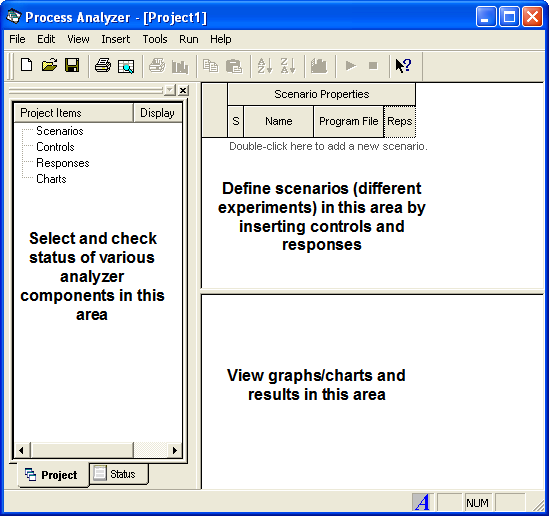
In the Process Analyzer you define the scenarios that you want to be executed. A scenario consists of a model in the form of a (.p) file, a set of controls, and a set of responses. To generate a (.p) file, you can use Run \(>\) Check Model. If the check is successful, this will create a (.p) file with the same name as your model to be located in the same directory as the model. Each scenario refers to one (.p) file but the set of scenarios can consist of scenarios that have different (.p) files. Thus, you can easily specify models with different structure as part of the set of scenarios.
To start a scenario, double-click on the add new scenario row within the scenario properties area. You can type in the name for the scenario and the name of the (.p) file (or use the file browser) to specify the scenario as shown in Figure 8.2.
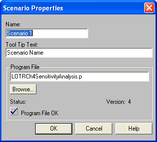
Then you can use the Insert menu to insert controls and response variables for the scenario. The insert control dialog is shown in Figure 8.3. Using this you should define a control for NREPS (number of replications), vStream (random number stream), vNCF (number of sales calls factor), vIDF (standard deviation of inner ring factor), and vODF (standard deviation of outer ring factor). For each of the controls, be sure to specify the proper data type (e.g. vStream is an Integer, vIDF is a real).
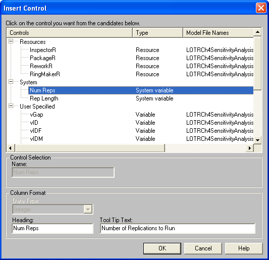
After specifying the first scenario, select the row, right-click and choose Duplicate Scenario(s) until you have defined 8 scenarios. Then, you should complete the scenario definitions as shown in Figure 8.4. To insert a response, use the Insert menu and select the appropriate responses. In this analysis, you will focus on the average time it takes a pair of rings to complete production (PairOfRings.TotalTime), the throughput per day (Throughput), and the average time spent waiting at the rework station (Rework.Queue.WaitingTime).
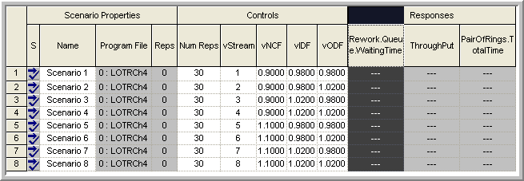
Since a different stream number has been specified for each of the scenarios, they will all be independent. Within the context of experimental design, this is useful because traditional experimental design techniques (such as response surface analysis) depend on the assumption that the experimental design points are independent. If you use the same stream number for each of the scenarios then you will be using common random numbers. From the standpoint of the analysis via traditional experimental design techniques this poses an extra complication. The analysis of experimental designs with common random numbers is beyond the scope of this text. The interested reader should refer to (Kleijnen, 1988) and (Kleijnen, 1998).
To run all the experiments consecutively, select the scenarios that you want to run and use the Run menu or the VCR like run button. Each scenario will run the number of specified replications and the results for the responses will be tabulated in the response area as shown in Figure 8.5. After the simulations have been completed, you can add more responses and the results will be shown.
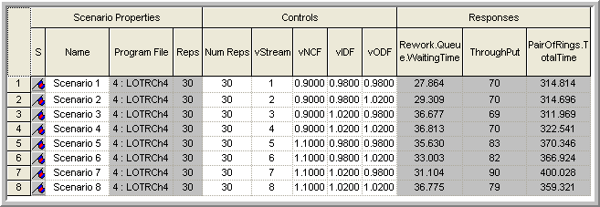
The purpose in performing a sensitivity analysis is two-fold: 1) to see if small changes in the factors result in significant changes in the responses and 2) to check if the expected direction of change in the response is achieved. Intuitively, if there is low variability in the ring diameters, then you should expect less rework and thus less queuing at the rework station. In addition, if there is more variability in the ring diameters then you might expect more queuing at the rework station. From the responses for scenarios 1 and 4, this basic intuition is confirmed. The results in Figure 8.5 indicate that scenario 4 has a slightly higher rework waiting time and that scenario 1 has the lowest rework waiting time. Further analysis can be performed to examine the statistical significance of these differences.
In general, you should examine the other responses to validate that your simulation is performing as expected for small changes in the levels of the factors. If the simulation does not perform as expected, then you should investigate the reasons. A more formal analysis involving experimental design and analysis techniques may be warranted to ensure statistical confidence in your analysis.
Again, within a simulation context, you know that there should be differences in the responses, so that standard ANOVA tests of differences in means are not really meaningful. In other words, they simply tell you whether you took enough samples to detect a difference in the means. Instead, you should be looking at the magnitude and direction of the responses. A full discussion of the techniques of experimental design is beyond the scope of this chapter. For a more detailed presentation of the use of experimental design in simulation, you are referred to (Law, 2007) and (Kleijnen, 1998).
Selecting a particular response cell will cause additional statistical information concerning the response to appear in the status bar at the left-hand bottom of the Process Analyzer main window. In addition, if you place your cursor in a particular response cell, you can build charts associated with the individual replications associated with that response. Place your cursor in the cell as shown in Figure 8.5 and right-click to insert a chart. The Chart Wizard will start and walk you through the chart building. In this case, you will make a simple bar chart of the rework waiting times for each of the 30 replications of scenario 1. In the chart wizard, select “Compare the replication values of a response for a single scenario” and choose the Column chart type. Proceed through the chart wizard by selecting Next (and then Finish) making sure that the waiting time is your performance measure. You should see a chart similar to that shown in Figure 8.6.
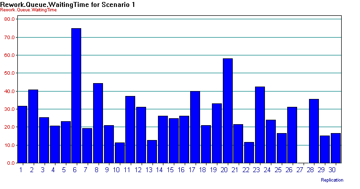
If you right-click on the chart options pop-up menu, you can gain access to the data and properties of the chart (Figure 8.7). From this dialog you can copy the data associated with the chart. This gives you an easy mechanism for cutting and pasting the data into another application for additional analysis.
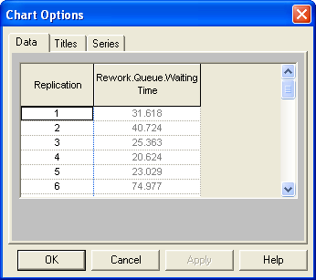
To create a chart across the scenarios, select the column associated with the desired response and right-click. Then, select Insert Chart from the pop up menu. This will bring up the chart wizard with the “Compare the average values of a response across scenarios” option selected. In this example, you will make a box and whisker chart of the waiting times. Follow the wizard through the process until you have created a chart as shown in Figure 8.8.
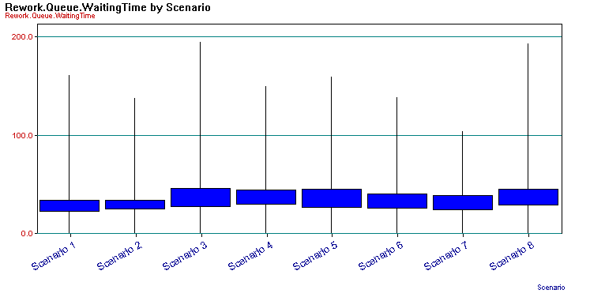
There are varying definitions of what constitutes a box-whiskers plot. In the Process Analyzer, the box-whiskers plot shows whiskers (narrow thin lines) to the minimum and maximum of the data and a box (dark solid rectangle) which encapsulates the inter-quartile range for the data (\(3^{rd} \, \text{Quartile} – 1^{st} \, \text{Quartile}\)). Fifty percent of the data is within the box. This plot can give you an easy way to compare the distribution of the responses across the scenarios. Right-clicking on the chart give you access to the data used to build the chart, and in particular it includes the 95% half-widths for confidence intervals on the responses. Table 8.3 shows the data copied from the box-whiskers chart.
| Scenario | Min (A) | Max | Low | Hi | 95% CI |
|---|---|---|---|---|---|
| Scenario 1 | 0 | 160.8 | 22.31 | 33.42 | 5.553 |
| Scenario 2 | 0 | 137.2 | 24.93 | 33.69 | 4.382 |
| Scenario 3 | 0 | 194.1 | 27.47 | 45.88 | 9.205 |
| Scenario 4 | 0 | 149.8 | 29.69 | 43.93 | 7.12 |
| Scenario 5 | 0 | 159.2 | 26.58 | 44.68 | 9.052 |
| Scenario 6 | 0 | 138.3 | 26.11 | 39.9 | 6.895 |
| Scenario 7 | 0 | 103.5 | 24 | 38.2 | 7.101 |
| Scenario 8 | 0 | 193.1 | 28.82 | 44.73 | 7.956 |
This section illustrated how to setup experiments to test the sensitivity of various factors within your models by using the Process Analyzer. After you are satisfied that your simulation model is working as expected, you often want to use the model to help to pick the best design out of a set of alternatives. The case of two alternatives has already been discussed; however, when there are more than two alternatives, more sophisticated statistical techniques are required in order to ensure that a certain level of confidence in the decision making process is maintained. The next section overviews why more sophisticated techniques are needed. In addition, the section illustrates how to facilitate the analysis using the Process Analyzer.
8.1.2 Multiple Comparisons with the Best
Suppose that you are interested in analyzing \(k\) systems based on performance measures \(\theta_i, \, i = 1,2, \ldots, k\). The goals may be to compare each of the \(k\) systems with a base case (or existing system), to develop an ordering among the systems, or to select the best system. In any case, assume that some decision will be made based on the analysis and that the risk associated with making a bad decision needs to be controlled. In order to perform an analysis, each \(\theta_i\) must be estimated, which results in sampling error for each individual estimate of \(\theta_i\). The decision will be based upon all the estimates of \(\theta_i\) (for every system). The the sampling error involves the sampling for each configuration. This compounds the risk associated with an overall decision. To see this more formally, the “curse” of the Bonferroni inequality needs to be understood.
The Bonferroni inequality states that given a set of (not necessarily independent) events, \(E_i\), which occur with probability, \(1-\alpha_i\), for \(i = 1,2,\ldots, k\) then a lower bound on the probability of the intersection of the events is given by:
\[P \lbrace \cap_{i=1}^k E_i \rbrace \geq 1 - \sum_{i=1}^k \alpha_i\]
In words, the Bonferroni inequality states that the probability of all the events occurring is at least one minus the sum of the probability of the individual events occurring. This inequality can be applied to confidence intervals, which are probability statements concerning the chance that the true parameter falls within intervals formed by the procedure.
Suppose that you have \(c\) confidence intervals each with confidence \(1-\alpha_i\). The \(i^{th}\) confidence interval is a statement \(S_i\) that the confidence interval procedure will result in an interval that contains the parameter being estimated. The confidence interval procedure forms intervals such that \(S_i\) will be true with probability \(1-\alpha_i\). If you define events, \(E_i = \lbrace S_i \text{is true}\rbrace\), then the intersection of the events can be interpreted as the event representing all the statements being true.
\[P\lbrace \text{all} \, S_i \, \text{true}\rbrace = P \lbrace \cap_{i=1}^k E_i \rbrace \geq 1 - \sum_{i=1}^k \alpha_i = 1 - \alpha_E\]
where \(\alpha_E = \sum_{i=1}^k \alpha_i\). The value \(\alpha_E\) is called the overall error probability. This statement can be restated in terms of its complement event as:
\[P\lbrace \text{one or more} \, S_i \, \text{are false} \rbrace \leq \alpha_E\]
This gives an upper bound on the probability of a false conclusion based on the confidence intervals.
This inequality can be applied to the use of confidence intervals when comparing multiple systems. For example, suppose that you have, \(c = 10\), 90% confidence intervals to interpret. Thus, \(\alpha_i = 0.10\), so that
\[\alpha_E = \sum_{i=1}^{10} \alpha_i = \sum_{i=1}^{10} (0.1) = 1.0\]
Thus, \(P\lbrace \text{all} \, S_i \, \text{true}\rbrace \geq 0\) or \(P\lbrace\text{one or more} \, S_i \, \text{are false} \rbrace \leq 1\). In words, this is implying that the chance that all the confidence intervals procedures result in confidence intervals that cover the true parameter is greater than zero and less than 1. Think of it this way: If your boss asked you how confident you were in your decision, you would have to say that your confidence is somewhere between zero and one. This would not be very reassuring to your boss (or for your job!).
To combat the “curse” of Bonferroni, you can adjust your confidence levels in the individual confidence statements in order to obtain a desired overall risk. For example, suppose that you wanted an overall confidence of 95% on making a correct decision based on the confidence intervals. That is you desire, \(\alpha_E\) = 0.05. You can pre-specify the \(\alpha_i\) for each individual confidence interval to whatever values you want provided that you get an overall error probability of \(\alpha_E = 0.05\). The simplest approach is to assume \(\alpha_i = \alpha\). That is, use a common confidence level for all the confidence intervals. The question then becomes: What should \(\alpha\) be to get \(\alpha_E\) = 0.05? Assuming that you have \(c\) confidence intervals, this yields:
\[\alpha_E = \sum_{i=1}^c \alpha_i = \sum_{i=1}^c \alpha = c\alpha\]
So that you should set \(\alpha = \alpha_E/c\). For the case of \(\alpha_E = 0.05\) and \(c = 10\), this implies that \(\alpha = 0.005\). What does this do to the width of the individual confidence intervals? Since the \(\alpha_i = \alpha\) have gotten smaller, the confidence coefficient (e.g. \(z\) value or \(t\) value) used in confidence interval will be larger, resulting in a wider confidence interval. Thus, you must trade-off your overall decision error against wider (less precise) individual confidence intervals.
Because the Bonferroni inequality does not assume independent events it can be used for the case of comparing multiple systems when common random numbers are used. In the case of independent sampling for the systems, you can do better than simply bounding the error. For the case of comparing \(k\) systems based on independent sampling the overall confidence is:
\[P \lbrace \text{all}\, S_i \, \text{true}\rbrace = \prod_{i=1}^c (1 - \alpha_i)\]
If you are comparing \(k\) systems where one of the systems is the standard (e.g. base case, existing system, etc.), you can reduce the number of confidence intervals by analyzing the difference between the other systems and the standard. That is, suppose system one is the base case, then you can form confidence intervals on \(\theta_1 - \theta_i\) for \(i = 2,3,\ldots, k\). Since there are \(k - 1\) differences, there are \(c = k - 1\) confidence intervals to compare.
If you are interested in developing an ordering between all the systems, then one approach is to make all the pair wise comparisons between the systems. That is, construct confidence intervals on \(\theta_j - \theta_i\) for \(i \neq j\). The number of confidence intervals in this situation is
\[c = \binom{k}{2} = \frac{k(k - 1)}{2}\]
The trade-off between overall error probability and the width of the individual confidence intervals will become severe in this case for most practical situations.
Because of this problem a number of techniques have been developed to allow the selection of the best system (or the ranking of the systems) and still guarantee an overall pre-specified confidence in the decision. The Process Analyzer uses a method based on multiple comparison procedures as described in (Goldsman & Nelson, 1998) and the references therein. See also (Law, 2007) for how these methods relate to other ranking and selection methods.
While it is beyond the scope of this textbook to review multiple comparison with the best (MCB) procedures, it is useful to have a basic understanding of the form of the confidence interval constructed by these procedures. To see how MCB procedures avoid part of the issues with having a large number of confidence intervals, we can note that the confidence interval is based on the difference between the best and the best of the rest. Suppose we have \(k\) system configurations to compare and suppose that somehow you knew that the \(i^{th}\) system is the best. Now, consider a confidence interval system’s \(i\) performance metric, \(\theta_i\), of the following form:
\[ \theta_i - \max_{j \neq i} \theta_j \] This difference is the difference between the best (\(\theta_i\)) and the second best. This is because if \(\theta_i\) is the best, when we find the maximum of those remaining, it will be next best (i.e. second best). Now, let us suppose that system \(i\) is not the best. Reconsider, \(\theta_i - \max_{j \neq i} \theta_j\). Then, this difference will represent the difference between system \(i\), which is not the best, and the best of the remaining systems. In this case, because \(i\) is not the best, the set of systems considered in \(\max_{j \neq i} \theta_j\) will contain the best. Therefore, in either case, this difference:
\[ \theta_i - \max_{j \neq i} \theta_j \] tells us exactly what we want to know. This difference allows us to compare the best system with the rest of the best. MCB procedures build \(k\) confidence intervals:
\[ \theta_i - \max_{j \neq i} \theta_j \ \text{for} \ i=1,2, \dots,k \] Therefore, only \(k\) confidence intervals need to be considered to determine the best rather than, \(\binom{k}{2}\).
This form of confidence interval has also been combined with the concept of an indifference zone. Indifference zone procedures use a parameter \(\delta\) that indicates that the decision maker is indifferent between the performance of two systems, if the difference is less than \(\delta\). This indicates that even if there is a difference, the difference is not practically significant to the decision maker within this context. These procedures attempt to ensure that the overall probability of correct selection of the best is \(1-\alpha\), whenever, \(\theta_{i^{*}} - \max_{j \neq i^{*}} \theta_j > \delta\), where \(i^{*}\) is the best system and \(\delta\) is the indifference parameter. This assumes that larger is better in the decision making context. There are a number of single stage and multiple stage procedures that have been developed to facilitate decision making in this context.
One additional item of note to consider when using these procedures. The results may not be able to distinguish between the best and others. For example, assuming that we desire the maximum (bigger is better), then let \(\hat{i}\) be the index of the system found to be the largest and let \(\hat{\theta}_{i}\) be the estimated performance for system \(i\), then, these procedures allow the following:
- If \(\hat{\theta}_{i} - \hat{\theta}_{\hat{i}} + \delta \leq 0\), then we declare that system \(i\) not the best.
- If \(\hat{\theta}_{i} - \hat{\theta}_{\hat{i}} + \delta > 0\), then we can declare that system \(i\) is not statistically different from the best. In this case, system \(i\), may in fact be the best.
The procedure used by Arena’s Process Analyzer allows for the opportunity to provide an indifference parameter and the procedure will highlight via color which systems are best or not statistically different from the best. The statistical software, \(R\), also has a package that facilitates multiple comparison procedures called multcomp. The interested reader can refer to the references for the package for further details.
Using the scenarios that were already defined within the sensitivity analysis section, the following example illustrates how you can select the best system with an overall confidence of 95%. The procedure built into the Process Analyzer can handle common random numbers. The previously described scenarios were set up and re-executed as shown in Figure 8.9. Notice in the figure that the stream number for each scenario was set to the same value, thereby, applying common random numbers. The PAN file for this analysis is called LOTR-MCB.pan and can be found in the supporting files folder called SensitivityAnalysis for this chapter.
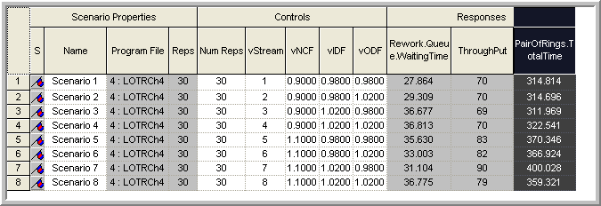
Suppose you want to pick the best scenario in terms of the average time that a pair of rings spends in the system. Furthermore, suppose that you are indifferent between the systems if they are within 5 minutes of each other. Thus, the goal is to pick the system that has the smallest time with 95% confidences.
To perform this analysis, right-click on the PairOfRings.TotalTime response column and choose insert chart. Make sure that you have selected “Compare the average values of a response across scenarios” and select a suitable chart in the first wizard step. This example uses a Hi-Lo chart which displays the confidence intervals for each response as well has the minimum and maximum value of each response. The comparison procedure is available with the other charts as well. On the second wizard step, you can pick the response that you want (PairOfRings.TotalTime) and choose next. On the 3rd wizard step you can adjust your titles for your chart. When you get to the 4th wizard step, you have the option of identifying the best scenario. Figure 8.10 illustrates the settings for the current situation. Select the “identify the best scenarios option” with the smaller is better option, and specify an indifference amount (Error tolerance) as 5 minutes. Using the Show Best Scenarios button, you can see the best scenarios listed. Clicking Finish causes the chart to be created and the best scenarios to be identified in red (scenarios 1, 2, 3, & 4) as shown in Figure 8.11.
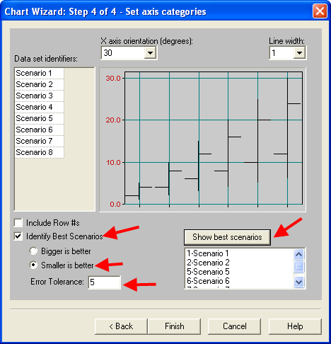
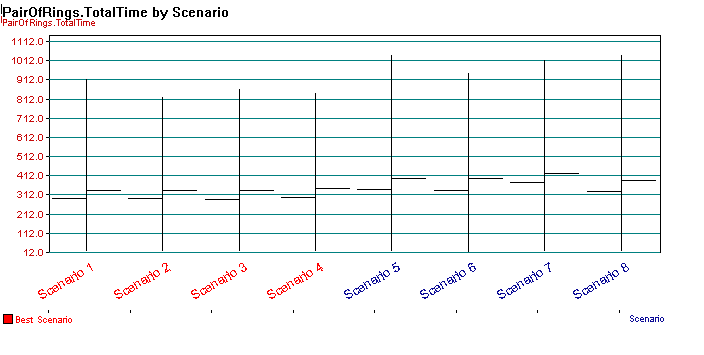
As indicated in Figure 8.11, four possible scenarios have been recommended as the best. This means that you can be 95% confident that any of these 4 scenarios is the best based on the 5 minute error tolerance. This analysis has narrowed down the set of scenarios, but has not recommended a specific scenario because of the variability and closeness of the responses. To further narrow the set of possible best scenarios down, you can run additional replications of the identified scenarios and adjust your error tolerance. Thus, with the Process Analyzer you can easily screen systems out of further consideration and adjust your statistical analysis in order to meet the objectives of your simulation study.
Now that we have a good understanding of how to effectively use the Process Analyzer, we will study how to apply these concepts on an Arena Contest problem.
8.2 SM Testing Contest Problem Description
At this point you have learned a great deal concerning the fundamentals of simulation modeling and analysis. The purpose of this section is to help you to put your new knowledge into practice by demonstrating the modeling and analysis of a system in its entirety. Ideally, experience in simulating a real system would maximize your understanding of what you have learned; however, a realistic case study should provide this experience within the limitations of the textbook. During the past decade, Rockwell Software (the makers of ) and the Institute of Industrial Engineers (IIE) have sponsored a student contest involving the use of to model a realistic situation. The contest problems have been released to the public and can be found on the main Arena web-site. This section will solve one of the previous contest problems. This process will illustrate the simulation modeling steps from conceptualization to final recommendations. After solving the case study, you should have a better appreciation for and a better understanding of the entire simulation process.
This section reproduces in its entirety the \(7^{th}\) Annual Contest Problem entitled: SM Testing. Then, the following sections present a detailed solution to the problem. As you read through the following section, you should act as if you are going to be required to solve the problem. That is, try to apply the simulation modeling steps by jotting down your own initial solution to the problem. Then, as you study the detailed solution, you can compare your approach to the solution presented here.
Rockwell Software/IIE 7th Annual Contest Problem: SM Testing
SM Testing is the parent company for a series of small medical laboratory testing facilities. These facilities are often located in or near hospitals or clinics. Many of them are new and came into being as a direct result of cost-cutting measures undertaken by the medical community. In many cases, the hospital or clinic bids their testing out to an external contractor, but provides space for the required laboratory within their own facility.
SM Testing provides a wide variety of testing services and has long-term plans to increase our presence in this emerging market. Recently, we have concentrated on a specific type of testing laboratory and have undertaken a major project to automate most of these facilities. Several pilot facilities have been constructed and have proven to be effective not only in providing the desired service, but also in their profitability. The current roadblock to a mass offering of these types of services is our inability to size the automated system properly to the specific site requirements. Although a method was developed for the pilot projects, it dramatically underestimated the size of the required system. Thus, additional equipment was required when capacity problems were uncovered. Although this trial-and-error approach eventually provided systems that were able to meet the customer requirements, it is not an acceptable approach for mass introduction of these automated systems. The elapsed time from when the systems were initially installed to when they were finally able to meet the customer demands ranged from 8 to 14 months. During that time, manual testing supplemented the capacity of the automated system. This proved to be extremely costly.
It is obvious that we could intentionally oversize the systems as a way of always meeting the projected customer demand, but it is understood that a design that always meets demand may result in a very expensive system with reduced profitability. We would like to be able to size these systems easily so that we meet or exceed customer requirements while keeping our investment at a minimum. We have explored several options to resolve this problem and have come to the conclusion that computer simulation may well provide the technology necessary to size these systems properly.
Prior to releasing this request for recommendations, our engineering staff developed a standard physical configuration that will be used for all future systems. A schematic of this standard configuration is shown in Figure 8.12.
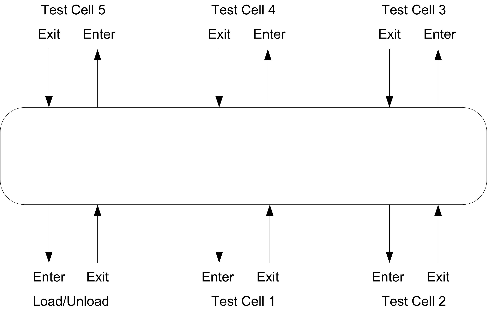
The standard configuration consists of a transportation loop or racetrack joining six different primary locations: one load/unload area and five different test cells. Each testing cell will contain one or more automated testing devices that perform a test specific to that cell. The load/unload area provides the means for entering new samples into the system and removing completed samples from the system.
The transportation loop or racetrack can be visualized as a bucket conveyor or a simple power-and-free conveyor. Samples are transported through the system on special sample holders that can be thought of as small pallets or carts that hold the samples. The number of sample holders depends on the individual system. The transportation loop is 48 feet long, and it can accommodate a maximum of 48 sample holders, spaced at 1-foot increments. Note that because sample holders can also be within a test cell or the load/unload area, the total number of sample holders can exceed 48. The distance between the Enter and Exit points at the load/unload area and at each of the test cells is 3 feet. The distance between the Exit point of one cell and the Enter point of the next cell is 5 feet.
Let’s walk through the movement of a typical sample through the system. Samples arriving at the laboratory initially undergo a manual preparation for the automated system. The sample is then placed in the input queue to the load/unload area. This manual preparation typically requires about 5 minutes. When the sample reaches the front of the queue, it waits until an empty sample holder is available. At that point, the sample is automatically loaded onto the sample holder, and the unit (sample on a sample holder) enters the transportation loop. The process of a unit entering the transportation loop is much like a car entering a freeway from an on ramp. As soon as a vacant space is available, the unit (or car) merges into the flow of traffic. The transportation loop moves the units in a counterclockwise direction at a constant speed of 1 foot per second. There is no passing allowed.
Each sample is bar-coded with a reference to the patient file as well as the sequence of tests that need to be performed. A sample will follow a specific sequence. For example, one sequence requires that the sample visit Test Cells 5 – 3 – 1 (in that order). Let’s follow one of these samples and sample holders (units) through the entire sequence. It leaves Load/Unload at the position marked Exit and moves in a counterclockwise direction past Test Cells 1 through 4 until it arrives at the Enter point for Test Cell 5. As the unit moves through the system, the bar code is read at a series of points in order for the system to direct the units to the correct area automatically. When it reaches Test Cell 5, the system checks to see how many units are currently waiting for testing at Test Cell 5. There is only capacity for 3 units in front of the testers, regardless of the number of testers in the cell. This capacity is the same for all of the 5 test cells. The capacity (3) does not include any units currently being tested or units that have completed testing and are waiting to merge back onto the transportation loop. If room is not available, the unit moves on and will make a complete loop until it returns to the desired cell. If capacity or room is available, the unit will automatically divert into the cell (much like exiting from a freeway). The time to merge onto or exit from the loop is negligible. A schematic of a typical test cell is provided in Figure 8.13.
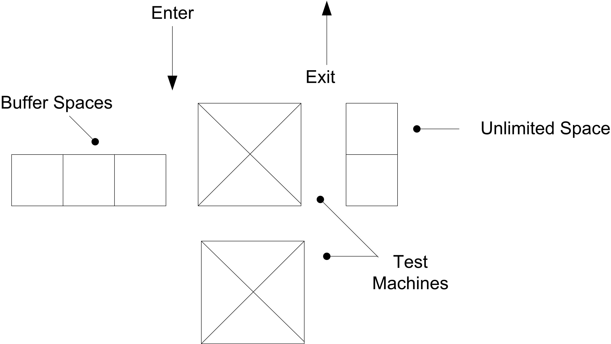
As soon as a tester becomes available, the unit is tested, the results are recorded, and the unit attempts to merge back onto the loop. Next it would travel to the Enter point for Test Cell 3, where the same logic is applied that was used for Test Cell 5. Once that test is complete, it is directed to Test Cell 1 for the last test. When all of the steps in the test sequence are complete, the unit is directed to the Enter point for the Unload area.
The data-collection system has been programmed to check the statistical validity of each test. This check is not performed until the sample leaves a tester. If the test results do not fall into accepted statistical norms, the sample is immediately sent back for the test to be performed a second time.
Although there can be a variable number of test machines at each of the test cells, there is only one device at the load/unload area. This area provides two functions: the loading of newly arrived samples and the unloading of completed samples. The current system logic at this area attempts to assure that a newly arrived sample never has to wait for a sample holder. Thus, as a sample holder on the loop approaches the Enter point for this area, the system checks to see whether the holder is empty or if it contains a sample that has completed its sequence. If the check satisfies either of these conditions, the system then checks to see if there is room for the sample holder in the load/unload area. This area has room for 5 sample holders, not including the sample holder on the load/unload device or any holders waiting to merge back onto the loop. If there is room, the sample holder enters the area. A schematic for the load/unload area is shown in Figure 8.14.
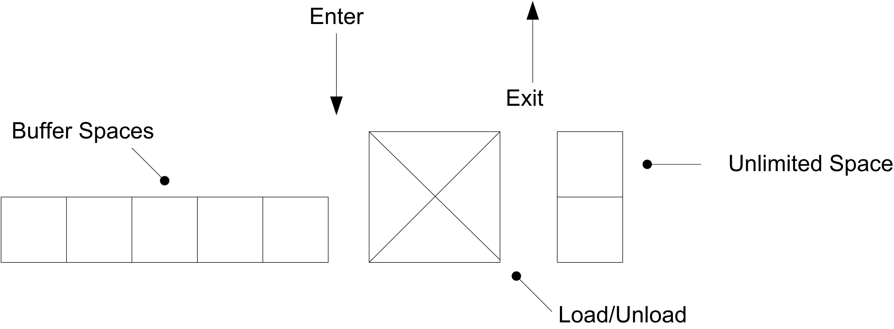
As long as there are sample holders in front of the load/unload device, it will continue to operate or cycle. It only stops or pauses if there are no available sample holders to process. The specific action of this device depends on the status of the sample holder and the availability of a new sample. There are four possible actions.
The sample holder is empty and the new sample queue is empty. In this case, there is no action required, and the sample holder is sent back to the loop.
The sample holder is empty and a new sample is available. In this case, the new sample is loaded onto the sample holder and sent to the loop.
The sample holder contains a completed sample, and the new sample queue is empty. In this case, the completed sample is unloaded, and the empty sample holder is sent back to the system.
The sample holder contains a completed sample, and a new sample is available. In this case, the completed sample is unloaded, and the new sample is loaded onto the sample holder and sent to the loop.
The time for the device to cycle depends on many different factors, but our staff has performed an analysis and concluded that the cycle time follows a triangular distribution with parameters 0.18, 0.23, and 0.45 (minutes). A sample is not considered complete until it is unloaded from its sample holder. At that time, the system will collect the results from its database and forward them to the individual or area requesting the test.
The time for an individual test is constant but depends on the testing cell. These cycle times are given in Table 8.4.
| Tester | Time |
|---|---|
| 1 | 0.77 |
| 2 | 0.85 |
| 3 | 1.03 |
| 4 | 1.24 |
| 5 | 1.7 |
Each test performed at Tester 3 requires 1.6 oz of reagent, and 38% of the tests at Tester 4 require 0.6 oz of a different reagent. These are standard reagents and are fed to the testers automatically. Testers periodically fail or require cleaning. Our staff has collected data on these activities, which are given in Table 8.5 for four of the testers. The units for mean time between failures (MTBF) are hours, and the units for mean time to repair (MTTR) are minutes.
| Tester | MTBF | MTTR |
|---|---|---|
| 1 | 14 | 11 |
| 3 | 9 | 7 |
| 4 | 15 | 14 |
| 5 | 16 | 13 |
The testers for Test Cell 2 rarely fail, but they do require cleaning after performing 300 tests. The clean time follows a triangular distribution with parameters (5, 6, 10) (minutes).
The next pilot-testing laboratory will be open 24 hours a day, seven days a week. Our staff has projected demand data for the site, which are provided Table 8.6. Hour 1 represents the time between midnight and 1 AM. Hour 24 represents the time between 11 PM and midnight. The rate is expressed in average arrivals per hour. The samples arrive without interruption throughout the day at these rates.
| Hour | Rate | Hour | Rate | Hour | Rate |
|---|---|---|---|---|---|
| 1 | 119 | 9 | 131 | 17 | 134 |
| 2 | 107 | 10 | 152 | 18 | 147 |
| 3 | 100 | 11 | 171 | 19 | 165 |
| 4 | 113 | 12 | 191 | 20 | 155 |
| 5 | 123 | 13 | 200 | 21 | 149 |
| 6 | 116 | 14 | 178 | 22 | 134 |
| 7 | 107 | 15 | 171 | 23 | 119 |
| 8 | 121 | 16 | 152 | 24 | 116 |
Each arriving sample requires a specific sequence of tests, always in the order listed. There are nine possible test sequences with the data given in Table 8.7.
| # | Test Cells | (%) |
|---|---|---|
| 1 | 1-2-4-5 | 9 |
| 2 | 3-4-5 | 13 |
| 3 | 1-2-3-4 | 15 |
| 4 | 4-3-2 | 12 |
| 5 | 2-5-1 | 7 |
| 6 | 4-5-2-3 | 11 |
| 7 | 1-5-3-4 | 14 |
| 8 | 5-3-1 | 6 |
| 9 | 2-4-5 | 13 |
Our contracts generally require that we provide test results within one hour from receipt of the sample. For this pilot, we also need to accommodate Rush samples for which we must provide test results within 30 minutes. It is estimated that 7% of incoming samples will be labeled Rush. These Rush samples are given preference at the load area.
We requested and received cost figures from the equipment manufacturers. These costs include initial capital, operating, and maintenance costs for the projected life of each unit. The costs given in Table 8.8 are per month per unit.
From this simulation study, we would like to know what configuration would provide the most cost-effective solution while achieving high customer satisfaction. Ideally, we would always like to provide results in less time than the contract requires. However, we also do not feel that the system should include extra equipment just to handle the rare occurrence of a late report.
| Equipment | Cost $ per month |
|---|---|
| Tester Type 1 | 10,000 |
| Tester Type 2 | 12,400 |
| Tester Type 3 | 8,500 |
| Tester Type 4 | 9,800 |
| Tester Type 5 | 11,200 |
| Sample holder | 387 |
During a recent SM Testing meeting, a report was presented on the observations of a previous pilot system. The report indicated that completed samples had difficulty entering the load/unload area when the system was loaded lightly. This often caused the completed samples to make numerous loops before they were finally able to exit. A concern was raised that longer-than-necessary test times potentially might cause a system to be configured with excess equipment.
With this in mind, we have approached our equipment vendor and have requested a quote to implement alternate logic at the exit point for the load/unload area only. The proposal gives priority to completed samples exiting the loop. When a sample holder on the loop reaches the Enter point for this area, the system checks the holder to see whether it is empty or contains a sample that has completed its sequence. If the sample holder contains a completed sample and there is room at Load/Unload, it leaves the loop and enters the area. If the sample holder is empty, it checks to see how many sample holders are waiting in the area. If that number is fewer than some suggested number, say 2, the sample holder leaves the loop and enters the area. Otherwise, it continues around the loop. The idea is always to attempt to keep a sample holder available for a new sample, but not to fill the area with empty sample holders. The equipment vendor has agreed to provide this new logic at a one-time cost of $85,000. As part of your proposal, we would like you to evaluate this new logic, including determining the best value of the suggested number.
Your report should include a recommendation for the most cost-effective system configuration. This should include the number of testers at each cell, the number of sample holders, and a decision on the proposed logic. Please provide all cost estimates on a per-month basis.
We are currently proceeding with the construction of this new facility and will not require a solution until two months from now. Since there are several groups competing for this contract, we have decided that we will not provide additional information during the analysis period. However, you are encouraged to make additional reasonable, documented assumptions. We look forward to receiving your report on time and reviewing your proposed solution.
8.3 Answering the Basic Modeling Questions
From your reading of the contest problem, you should have some initial ideas for how to approach this modeling effort. The following sections will walk through the simulation modeling steps in order to develop a detailed solution to the contest problem. As you proceed through the sections, you might want to jot down your own ideas and attempt some of your own analysis. While your approach may be different than what is presented here, your effort and engagement in the problem will be important to how much you get out of this process. Let’s begin the modeling effort with a quick iteration through the basic modeling questions.
\(\blacksquare\) What is the system? What information is known by the system?
The purpose of the system is to process test samples within test cells carried by sample holders on a conveyor. The system is well described by the contest problem. Thus, there is no need to repeat the system description here. In summary, the information known by the system is as follows:
Conveyor speed, total length, and spacing around the conveyor of entry and exit points for the test cells and the load/unload area
Load/Unload machine cycle time, TRIA(0.18, 0.23, 0.45) minutes
Manual preparation time
Cycle times for each tester. See Table 8.4.
Time to failure and repair distributions for testers 1, 3-5. See Table 8.5.
Test 2 usage count to cleaning and cleaning time distribution, TRIA(5.0, 6.0, 10.0) minutes
Sample arrival mean arrival rate by hour of the day. See Table 8.6.
Nine different test sequences for the samples along with the probability associated with each sequence.
A distribution governing the probability of rush samples within the system and a criteria for rush samples to meet (30 minute testing time).
Equipment costs for testers and sample holders. In addition, the cost of implementing additional logic within the model.
From this initial review of the information and the contest problem description, you should be able to develop an initial list of the modeling constructs that may be required in the model.
The initial list should concentrate on identifying primarily data modules. This will help in organizing the data related to the problem. From the list, you can begin to plan (even at this initial modeling stage) on making the model more data driven. That is, by thinking about the input parameters in a more general sense (e.g. expressions and variables), you can build the model in a manner that can improve its usability during experimentation. Based on the current information, a basic list of modeling constructs might contain the following:
CONVEYOR and SEGMENT Modules: To model the conveyor.
STATION Modules: To model the entry and exit points on the conveyor for the testers and the load/unload cell.
SEQUENCE Module: To model the test sequences for the samples.
EXPRESSION Module: To hold the load/unload cycle time and for an array of the cycle times for each tester. Can also be used to hold an expression for the manual preparation time, the sequence probability distribution and the rush sample distribution.
FAILURE Modules: To model both count based (for Tester 2) and time based failures.
ARRIVAL Schedule Module: To model the non-stationary arrival pattern for the samples.
VARIABLE Module: To include various system wide information such as cost information, number of sample holders, load/unload machine buffer capacity, test cell buffer capacity, test result criteria, etc.
Once you have some organized thoughts about the data associated with the problem, you can proceed with the identification of the performance measures that will be the major focus of the modeling effort.
\(\blacksquare\) What are the required performance measures?
From the contest problem description, the monthly cost of the system should be considered a performance measure for the system. The cost of the system will certainly affect the operational performance of the system. In terms of meeting the customer’s expectations, it appears that the system time for a sample is important. In addition, the contract specifies that test results need to be available within 60 minutes for regular samples and within 30 minutes for rush samples. While late reports do not have to be prevented, they should be rare. Thus, the major performance measures are:
Monthly cost
Average system time
Probability of meeting contract system time criteria
In addition to these primary performance measures, it would be useful to keep track of resource utilization, queue times, size of queues, etc., all of which are natural outputs of a typical model.
\(\blacksquare\) What are the entities? What information must be recorded or remembered for each entity? How should the entities be introduced into the system?
Going back to the definition of an entity (An object of interest in the system whose movement or operation within the system may cause the occurrence of events), there appear to be two natural candidates for entities within the model:
Samples – Arrive according to a pattern and travel through the system
Sample holders – Move through the system (e.g. on the conveyor)
To further solidify your understanding of these candidate entities, you should consider their possible attributes. If attributes can be identified, then this should give confidence that these are entities. From the problem, every sample must have a priority (rush or not), an arrival time (to compute total system time), and a sequence. Thus, priority, arrival time, and sequence appear to be natural attributes for a sample. Since a sample holder needs to know whether or not it has a sample, an attribute should be considered to keep track of this for each sample holder. Because both samples and sample holders have clear attributes, there is no reason to drop them from the list of candidate entities.
Thinking about how the candidate entities can enter the model will also assist in helping to understand their modeling. Since the samples arrive according to a non-stationary arrival process (with mean rates that vary by hour of the day), the use of a CREATE module with an ARRIVAL schedule appears to be appropriate. The introduction of sample holders is more problematic. Sample holders do not arrive to the system. They are just in the system when it starts operating. Thus, it is not immediately clear how to introduce the sample holders. Ask yourself, how can a CREATE module be used to introduce sample holders so that they are always in the system? If all the sample holders arrive at time 0.0, then they will be available when the system starts up. Thus, a CREATE module can be used to create sample holders.
At this point in the modeling effort, a first iteration on entity modeling has been accomplished; however, it is important to understand that this is just a first attempt at modeling and to remember to be open to future revisions. As you go through the rest of the modeling effort, you should be prepared to revise your current conceptual model as deeper understanding is obtained.
To build on the entity modeling, it is natural to ask what resources are used by the entities. This is the next modeling question.
\(\blacksquare\) What are the resources that are used by the entities? Which entities use which resources and how?
It is useful to reconsider the definition of a resource:
- Resource A limited quantity of items that are used (e.g. seized and released) by entities as they proceed through the system. A resource has a capacity that governs the total quantity of items that may be available. All the items in the resource are homogeneous, meaning that they are indistinguishable. If an entity attempts to use a resource that does not have units available it must wait in a queue.
Thus, the natural place to look for resources is where a queue of entities may form. Sample holders (with a sample) wait for testers. In addition sample holders, with or without a sample, wait for the load/unload machine. Thus, the testers and the load/unload machine are natural candidates for resources within the model. In addition, the problem states that:
Samples arriving at the laboratory initially undergo a manual preparation for the automated system. The sample is then placed in the input queue to the load/unload area. This manual preparation typically requires about 5 minutes. When the sample reaches the front of the queue, it waits until an empty sample holder is available.
It certainly appears from this wording that the availability of sample holders can constrain the movement of samples within the model. Thus, sample holders are a candidate for resource modeling.
A couple of remarks about this sort of modeling are probably in order. First, it should be more evident from the things identified as waiting in the queues that samples and sample holders are even more likely to be entities. For example, sample holders wait in queue to get on the conveyor. Now, since sample holders wait to get on a conveyor, does that mean that the conveyor is a candidate resource? Absolutely, yes! In this modeling, you are identifying resources with a little “r”. You are not identifying RESOURCES (a.k.a. things to put in the RESOURCE module)! Be aware that there are many ways to model resources within a simulation (e.g. inventory as a resource with WAIT/SIGNAL). The RESOURCE module is just one very specific method. Just because you identify something as a potential resource, it does not mean you have to use the RESOURCE module to model how it constrains the flow of entities.
The next step in modeling is to try to better understand the flow of entities by attempting to give a process description.
\(\blacksquare\) What are the process flows? Sketch the process or make an activity flow diagram
The first thing to remember when addressing process flow modeling is that you are building a conceptual model for the process flow. As you should recall, one way to do this is to consider an activity diagram (or some sort of augmented flow chart). Although in many of the previous modeling examples, there was almost a direct mapping from the conceptual model to the model, you should not expect this to occur for every modeling situation. In fact, you should try to build up your conceptual understanding independent of the modeling language. In addition, the level of detail included in the conceptual modeling is entirely up to you! Thus, if you do not know how to model a particular detail then you can just “black box it" or just omit it to be handled later.
Suppose an entity goes into an area for which a lot of detail is required. Just put a box on your diagram and indicate in a general manner what should happen in the box. If necessary, you can come back to it later. If you have complex decision logic that would really clutter up the diagram, then omit it in favor of first understanding the big picture. The complicated control logic for sample holders accessing the load/unload device and being combined with samples is an excellent candidate for this technique.
Before proceeding you might want to try to sketch out activity diagrams for the samples and the sample holders. Figure 8.15 presents a simplified activity diagram for the samples. They are created, go through a manual preparation activity, and then flow into the input queue. Whether they wait in the input queue depends upon the availability of the sample holder. Once they have a sample holder, they proceed through the system. The sample must have a sample holder to move through the system. Figure 8.16 illustrates a high level activity cycle diagram for the sample holders. Based on a sequence, they convey (with the sample) to the next appropriate tester. After each test is completed, the sample and holder are conveyed to the next tester in the sequence until they have completed the sequence. At that time, the sample holder and sample are conveyed to the load/unload machine where they experience the load/unload cycle time once they have the load/unload machine. If a sample is not available, the sample holder is conveyed back to the load/unload area.
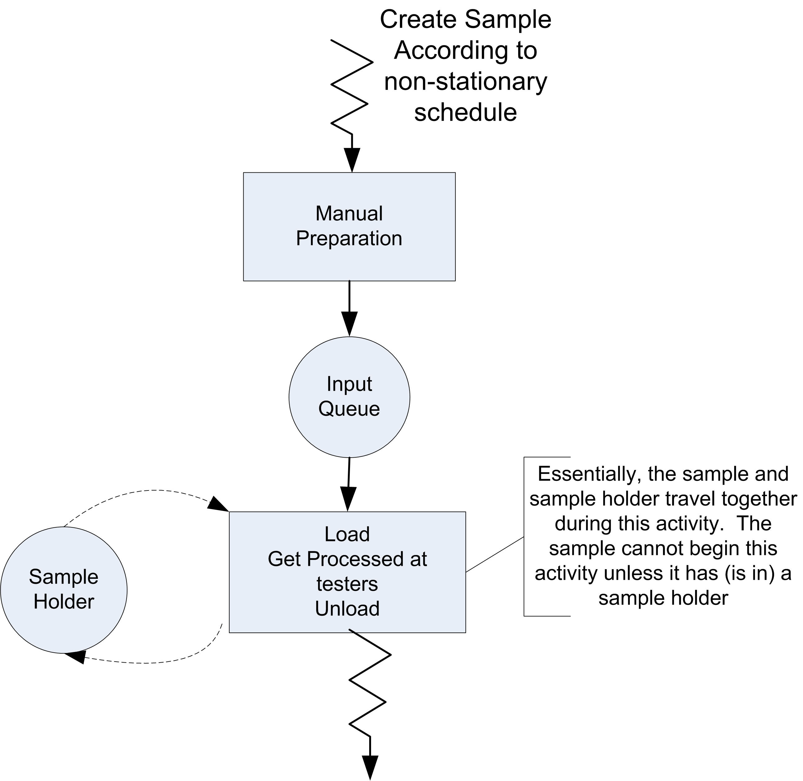
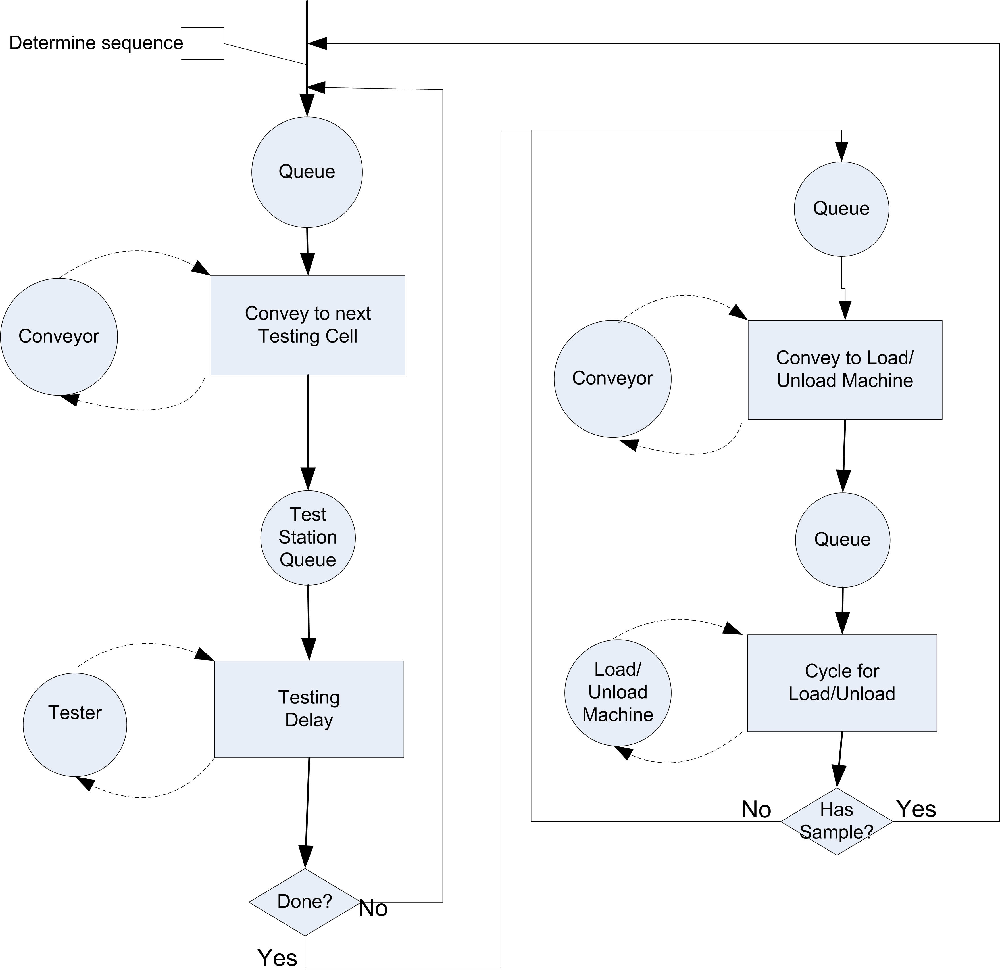
One thing to notice from this diagram is that the sequence does not have to be determined until the sample and holder are being conveyed to the first appropriate test cell. Also, it is apparent from the diagram that the load/unload machine is the final location visited by the sample and sample holder. Thus, the enter load/unload station can be used as the last location when using the SEQUENCE module. This diagram does not contain the extra logic for testing if the queue in front of a tester is full and the logic associated with the buffer at the load/unload machine.
8.4 Detailed Modeling
Given your conceptual understanding of the problem, you should now be ready to do more detailed modeling in order to prepare for implementing the model within . When doing detailed modeling it is often useful to segment the problem into components that can be more easily addressed. This is the natural problem solving technique called divide and conquer. Here you must think of the major system components, tasks, or modeling issues that need to be addressed and then work on them first separately and then concurrently in order to have the solution eventually come together as a whole. The key modeling issues for the problem appear to be:
Conveyor and station modeling (i.e. the physical modeling)
Modeling samples
Test Cell modeling including failures
Modeling sample holders
Modeling the load/unload area
Performance measure modeling (cost and statistical collection)
Simulation horizon and run parameters
The following sections will examine each of these issues in turn.
8.4.1 Conveyor and Station Modeling
Recall that conveyor constructs require that each segment of a conveyor be associated with stations within the model. From the problem, the conveyor should be 48 total feet in length. In addition, the problem gives 5 foot and 3 foot distances between the respective enter and exit points. Since the samples access the conveyor 3 feet from the location that they exited the conveyor, a segment is required for this 3 foot distance for the load/unload area and for each of the test cells. Thus, a station will be required for each exit and enter point on the conveyor. Therefore, there are 12 total stations required in the model. The Exit point for the load/unload machine can be arbitrarily selected as the first station on the loop conveyor.
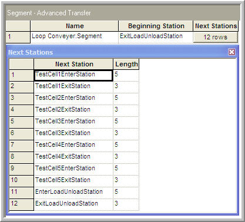
Figure 8.17 shows the segments for the conveyor. The test cells as well as the load/unload machine have exit and enter stations that define the segments. The exit point is for exiting the cell to access the conveyor. The enter point is for entering the cell (getting off of the conveyor). Since this is a loop conveyor, the last station listed on the segments should be the same as the first station used to start the segments. The problem also indicates that the sample holder takes up 1 foot when riding on the conveyor. Thus, it seems natural to model the cell size for the conveyor as 1 foot.
The conveyor module for this situation is shown in Figure 8.18. The velocity of the conveyor is 1 foot per second with a cell size of 1 foot. Since a sample holder takes up 1 foot on the conveyor and the cell size is 1 foot, the maximum number of cells occupied by an entity on the conveyor is simply 1 cell.
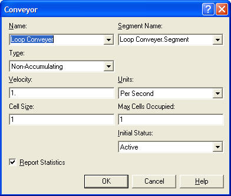
Since the stations are defined, the sequences within the model can now be defined. How you implement the sequences depends on how the conveyor is modeled and on how the physical locations of the work cells are mapped to the concept of stations. As in any model, there are a number of different methods to achieve the same objective. With stations defined for each entry and exit point, the sequences may use each of the entry and exit points. It should be clear that the entry points must be on the sequences; however, because the exit points are also stations you have the option of using them on the sequences as well. By using the exit point on the sequence, a ROUTE module can be used with the by sequence option to send a sample/sample holder to the appropriate exit station after processing. This could also be achieved by a direct connection, in which case it would be unnecessary to have the exit stations within the sequences. Figure 8.19 illustrates the sequence of stations for test sequence 1 for the problem. Notice that the stations alternate (enter then exit) and that the last station is the station representing the entry point for the load/unload area.
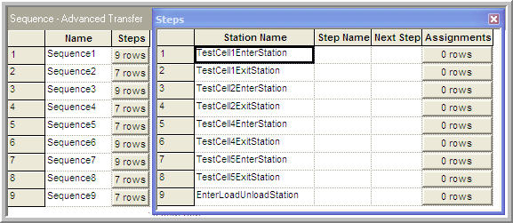
In order to randomly assign a sequence, the sequences can be placed into a set and then the index into the set randomly generated via the appropriate probability distribution. Figure 8.20 shows the Advanced Set module used to define the set of sequences for the model. In addition, Figure 8.21 shows the implementation of the distribution across the sequences as an expression, called eSeqIndex, using the DISC() function within the EXPRESSION module.
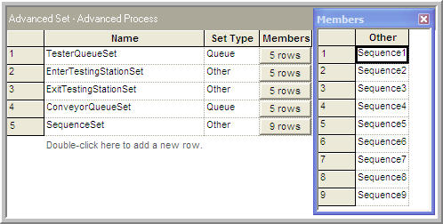
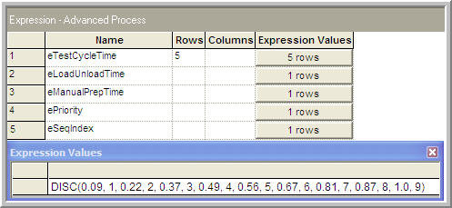
8.4.2 Modeling Samples and the Test Cells
When modeling a large complex problem, you should try to start with a simplified situation. This allows a working model to be developed without unnecessarily complicating the modeling effort. Then, as confidence in the basic model improves, enhancements to the basic model can take place. It will be useful to do just this when addressing the modeling of samples and sample holders.
As indicated in the activity diagrams, once a sample has a sample holder, the sample holder and sample essentially become one entity as they move through the system. Thus, a sample also follows the basic flow as laid out in Figure 8.16. This is essentially what happens to the sample when it is in the black box of Figure 8.15. Thus, to simplify the modeling, it is useful to assume that a sample holder is always available whenever a sample arrives. Since sample holders are not being modeled, there is no need to model the details of the load/unload machine. This assumption implies that once a sample completes its sequence it can simply exit at the load/unload area, and that any newly arriving samples simply get on at the load/unload area. With these assumptions, the modeling of the sample holders and the load/unload stations (including its complicated rules) can be by passed for the time being.
From the conceptual model (activity diagram), it should be clear that the testers can be easily modeled with the RESOURCE module. In addition, the diagram indicates that the logic at any test cell is essentially the same. This could lead to the use of generic stations. Based on all these ideas, you should be able to develop pseudo-code for this situation. If you are following along, you might want to pause and sketch out your own pseudo-code for the simplified modeling situation.
Samples are created according to a non-stationary arrival pattern and then are routed to the exit point for the load/unload station. Then, the samples access the conveyor and are conveyed to the appropriate test cell according to their sequence. Once at a test cell, they test if there is room to get off the conveyor. If so, they exit the conveyor and then use the appropriate tester (SEIZE, DELAY, RELEASE). After using the tester, they are routed to the exit point for the test cell, where they access the conveyor and are conveyed to the next appropriate station. If space is not available at the test cell, they do not exit the conveyor, but rather are conveyed back to the test cell to try again. Once the sample has completed its sequence, the sample will be conveyed to the enter load/unload area, where it exits the conveyor and is disposed. The following pseudo-code illustrates these concepts.
CREATE sample according to non-stationary pattern
BEGIN ASSIGN
myEnterSystemTime = TNOW
myPriorityType ~ Priority CDF
END ASSIGN
DELAY for manual preparation time
ROUTE to ExitLoadUnloadStation
STATION ExitLoadUnLoadStation
BEGIN ASSIGN
mySeqIndex ~ Sequence CDF
Entity.Sequence = MEMBER(SequenceSet, mySeqIndex)
Entity.JobStep = 0
END ASSIGN
ACCESS Loop Conveyor
CONVEY by Sequence
STATION Generic Testing Cell Enter
DECIDE
IF NQ at testing cell < cell waiting capacity
EXIT Loop Conveyor
SEIZE 1 unit of tester
DELAY for testing time
RELEASE 1 unit of tester
ROUTE to Generic Testing Cell Exit
ELSE
CONVEY back to Generic Testing Cell Enter
ENDIF
END DECIDE
STATION Generic Testing Cell Exit
ACCESS Loop Conveyor
CONVEY by Sequence
STATION EnterLoadUnloadStation
EXIT Loop Conveyor
RECORD System time
DISPOSEGiven the pseudo-code and the previous modeling, you should be able to develop an initial model for this simplified situation. For practice, you might try to implement the ideas that have been discussed before proceeding.
The model (with animation) representing this initial modeling is given in the file, SMTestingInitialModeling.doe. The flow chart modules corresponding to the pseudo-code are shown in Figure 8.22.
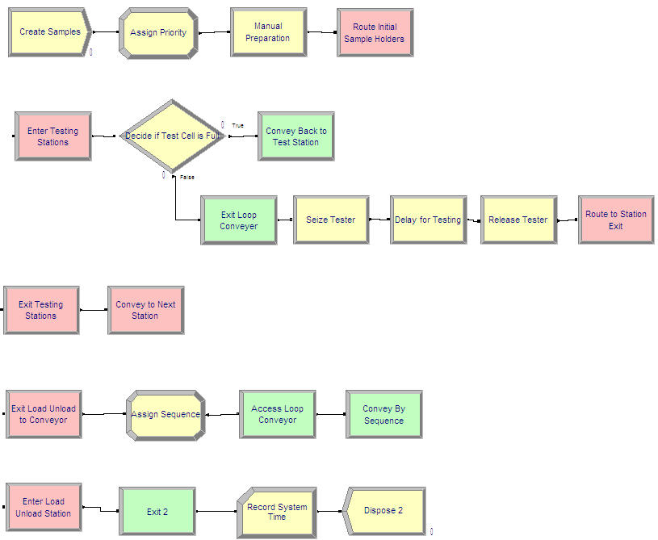
The following approach was taken when developing the initial model for samples and test cells:
Variables A variable array,
vTestCellCapacity(5), was defined to hold the capacity of each test cell. While for this particular problem, the cell capacity was the same for each cell, by making a variable array, the cell capacity can be easily varied if needed when testing the various design configurations.Expressions An arrayed expression,
eTestCycleTime(5), was defined to hold the cycle times for the testing machines. By making these expressions, they can be easily changed from one location in the model. In addition, expressions were defined for the manual preparation time (eManualPrepTime), the priority distribution (ePriority), and the sequence distribution (eSeqIndex).Resources Five separate resources were defined to represent the testers (
Cell1Tester,Cell2Tester,Cell3Tester,Cell4Tester,Cell5Tester)Sets A resource set,
TestCellResourceSet, was defined to hold the test cell resources for use in generic modeling. An entity picture set (SamplePictSet) with 9 members was defined to be able to change the picture of the sample according to the sequence it was following. A queue set,TesterQueueSet, was defined to hold the queues in front of each tester for use in generic modeling. In addition, a queue set,ConveyorQueueSet, was defined to hold the access queue for the conveyor at each test cell. Two station sets were defined to hold the enter (EnterTestingStationSet) and the exit (ExitTestingStationSet) stations for generic station modeling. Finally, a sequence set, SequenceSet, was use to hold the 9 sequences followed by the samples.Schedules An ARRIVAL schedule (see
- was defined to hold the arrival rates by hour to represent the non-stationary arrival pattern for the samples.
Failures Five failure modules were use to model the failure and cleaning associated with the test cells. Four failure modules (Tester 1 Failure, Tester 3 Failure, Tester 4 Failure, and Tester 5 Failure) defined time-based failures and the appropriate repair times. A count based failure was use to model Tester 2’s cleaning after 300 uses. The failures are illustrated in
- An important assumption with the use of the FAILURE module is that the entire resource becomes failed when a failure occurs. It is not clear from the contest problem specification what would happen at a test cell that has more than one tester when a failure occurs. Thus, for the sake of simplicity it will be useful to assume that each unit of a multiple unit tester does not fail individually.
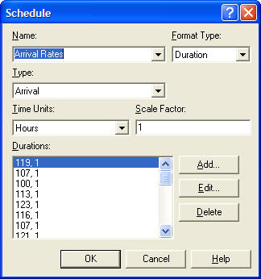
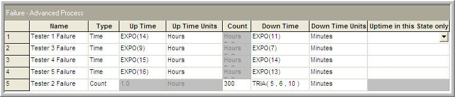
As a first step towards verifying that the model is working as intended, the initial model, SMTestingInitialModeling.doe, can be modified so that only 1 entity is created. For each of the nine different sequences the total distance traveled on the sequence and the total time for testing can be calculated. For example, for the first sequence, the distance from load/unload exit to the enter location of cell 1 is 5 feet, the distance from cell 1 exit to cell 2 enter is 5 feet, the distance from cell 2 exit to cell 4 enter is 13 feet, the distance from cell 4 exit to cell 5 enter is 5 feet, and finally the distance from cell 5 exit to the enter point for load/unload is 5 feet. This totals 33 feet as shown in Table 8.9. The time to travel 33 feet at 1 foot/second is 0.55 minutes. The total testing time for this sequence is (0.77 + 0.85 +1.24 +1.77 = 5.11) minutes. Finally, the preparation time is 5 minutes for all sequences. Thus, the total time that it should take a sample following sequence 1 should be 10.11 minutes assuming no waiting and no failures. To check that the model can reproduce this quantity, nine different model runs were made such that the single entity followed each of the nine different sequences. The total system time for the single entity was recorded and matched exactly those figures given in Table 8.9. This should give you confidence that the current implementation is working correctly, especially that there are no problems with the sequences. The modified model for testing sequence 9 is given in file, SMTestingInitialModelingTest1Entity.doe.
This testing also provides a lower bound on the expected system times for each of the sequences.
Now that a preliminary working model is available, an initial investigation of the resources required by the system and further verification can be accomplished. From the sequences that are given, the total percentage of the samples that will visit each of the test cells can be tabulated. For example, test cell 1 is visited in sequences 1, 3, 5, 7, and 8. Thus, the total percentage of the arrivals that must visit test cell 1 is (0.09 + 0.15 + 0.07 + 0.14 + 0.06 = 0.51). The total percentage for each of the test cells is given in Table 8.10.
| Cell | 1 | 2 | 3 | 4 | 5 | 6 | 7 | 8 | 9 | Total |
|---|---|---|---|---|---|---|---|---|---|---|
| 1 | 0.09 | 0.00 | 0.15 | 0.00 | 0.07 | 0.00 | 0.14 | 0.06 | 0.00 | 0.51 |
| 2 | 0.09 | 0.00 | 0.15 | 0.12 | 0.07 | 0.11 | 0.00 | 0.00 | 0.13 | 0.67 |
| 3 | 0.00 | 0.13 | 0.15 | 0.12 | 0.00 | 0.07 | 0.11 | 0.13 | 0.00 | 0.71 |
| 4 | 0.09 | 0.13 | 0.15 | 0.12 | 0.00 | 0.00 | 0.11 | 0.14 | 0.13 | 0.87 |
| 5 | 0.09 | 0.13 | 0.00 | 0.00 | 0.07 | 0.11 | 0.14 | 0.06 | 0.13 | 0.73 |
Using the total percentages given in Table 8.10, the mean arrival rate to each of the test cells for each hour of the day can be computed. From the data given in Table 8.6, you can see that the minimum hourly arrival rate is 100 and that it occurs in the 3rd hour. The maximum hourly arrival rate of 200 customers per hour occurs in the \(13^{th}\) hour. From the minimum and maximum hourly arrival rates, you can get an understanding of the range of resource requirements for this system. This will not only help when solving the problem, but will also help in verifying that the model is working as intended.
Let’s look at the peak arrival rate first. From the discussion in Appendix C, the offered load is a dimensionless quantity that gives the average amount of work offered per time unit to the \(c\) servers in a queuing system. The offered load is defined as: \(r = \lambda/\mu\). This can be interpreted as each customer arriving with \(1/\mu\) average units of work to be performed. It can also be thought of as the expected number of busy servers if there are an infinite number of servers. Thus, the offered load can give a good idea of about how many servers might be utilized. Table 8.11 calculates the offered load for each of the test cells under the peak arrival rate.
| Cell | Minutes | Hours | Arrival | Service | Load |
|---|---|---|---|---|---|
| 1 | 0.77 | 0.01283 | 102 | 77.92 | 1.31 |
| 2 | 0.85 | 0.01417 | 134 | 70.59 | 1.90 |
| 3 | 1.03 | 0.01717 | 142 | 58.25 | 2.44 |
| 4 | 1.24 | 0.02067 | 174 | 48.39 | 3.60 |
| 5 | 1.70 | 0.02833 | 146 | 35.29 | 4.14 |
The arrival rate for the first test cell is 0.51 \(\times\) 200 = 102. Thus, you can see that a little over 1 server can be expected to be busy at the first test cell under peak loading conditions.
You can confirm these numbers by modifying the model so that the resource capacities of the test cells are infinite and by removing the failure modules from the resources. In addition, the CREATE module will need to be modified so that the arrival rate is 200 samples per hour. If you run the model for ten, 24 hour days, the results shown in Figure 8.25 will be produced. As can be seen in the figure, the results match very closely to that of the offered load analysis.
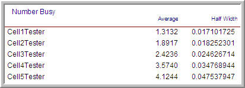
These results provide additional evidence that the initial model is working properly and indicate how many units of each test cell might be needed under peak conditions. The model is given in the file, SMTestingInitialModelingOnResources.doe. Table 8.12 indicates the offered load under the minimum arrival rate.
| Cell | Minutes | Hours | Arrival | Service | Load |
|---|---|---|---|---|---|
| 1 | 0.77 | 0.01283 | 51 | 77.92 | 0.65 |
| 2 | 0.85 | 0.01417 | 67 | 70.59 | 0.95 |
| 3 | 1.03 | 0.01717 | 71 | 58.25 | 1.22 |
| 4 | 1.24 | 0.02067 | 87 | 48.39 | 1.80 |
| 5 | 1.70 | 0.02833 | 73 | 35.29 | 2.07 |
Based on the analysis of the offered load, a preliminary estimate of the resource requirements for each test cell can be determined as in Table 8.13. The requirements were determined by rounding up the computed offered load for each test cell. This provides a range of values since it is not clear that designing to the maximum is necessary given the non-stationary behavior of the arrival of samples.
| Test Cell | Low | High |
|---|---|---|
| 1 | 1 | 2 |
| 2 | 1 | 2 |
| 3 | 2 | 3 |
| 4 | 2 | 4 |
| 5 | 3 | 5 |
8.4.3 Modeling Sample Holders and the Load/Unload Area
Now that a basic working model has been developed and tested, you should feel comfortable with more detailed modeling involving the sample holders and the load/unload area. From the previous discussion, the sample holders appeared to be an excellent candidate for being modeled as an entity. In addition, it also appeared that the sample holders could be modeled as a resource because they also constrain the flow of the sample if a sample holder is not available. There are a number of modeling approaches possible for addressing this situation. By considering the functionality of the load/unload machine, the situation may become more clear. The problem states that:
As long as there are sample holders in front of the load/unload device, it will continue to operate or cycle. It only stops or pauses if there are no available sample holders to process.
Since the load/unload machine is clearly a resource, the fact that sample holders wait in front of it and that it operates on sample holders indicates that sample holders should be entities. Further consideration of the four possible actions of the load/unload machine can provide some insight on how samples and sample holders interact. As a reminder, the four actions are:
The sample holder is empty and the new sample queue is empty. In this case, there is no action required, and the sample holder is sent back to the loop.
The sample holder is empty and a new sample is available. In this case, the new sample is loaded onto the sample holder and sent to the loop.
The sample holder contains a completed sample, and the new sample queue is empty. In this case, the completed sample is unloaded, and the empty sample holder is sent back to the system.
The sample holder contains a completed sample, and a new sample is available. In this case, the completed sample is unloaded, and the new sample is loaded onto the sample holder and sent to the loop.
Thus, if a sample holder contains a sample, it is unloaded during the load/unload cycle. In addition, if a sample is available, it is loaded onto the sample holder during the load/unload cycle. The cycle time for the load/unload machine varies according to a triangular distribution, but it appears as if both the loading and/or the unloading can happen during the cycle time. Thus, whether there is a load, an unload, or both, the time using the load/unload machine is triangularly distributed. If the sample holder has a sample, then during the load/unload cycle, they are separated from each other. If a new sample is waiting, then the sample holder and the new sample are combined together during the processing. This indicates two possible approaches to modeling the interaction between sample holders and samples:
BATCH and SEPARATE The BATCH module can be used to batch the sample and the sample holder together. Then the SEPARATE module can be used to split them apart.
PICKUP and DROPOFF The PICKUP module can be used to have the sample holder pick up a sample, and the DROPOFF module can be used to have the sample holder drop off a completed sample.
Of the two methods, the PICKUP/DROPOFF approach is potentially easier since it puts the sample holder in charge. In the BATCH/SEPARATE approach, it will be necessary to properly coordinate the movement of the sample and the sample holder (perhaps through MATCH, WAIT, SIGNAL modules). In addition, the BATCH module requires careful thought about how to handle the formation of the representative entity and its attributes. In what follows the PICKUP/DROPOFF approach will be used. As an exercise, you might attempt the BATCH/SEPARATE approach.
To begin the modeling of sample holders and samples, you need to think about how they are created and introduced into the model. The samples should continue to be created according to the non-stationary arrival pattern, but after preparation occurs they need to wait until they are picked up by a sample holder. This type of situation can be modeled very effectively with a HOLD module with the infinite hold option specified. In a sense, this is just like the bus system situation of Chapter 7. Now you should be able to sketch out the pseudo-code for this situation.
The pseudo-code for this situation has been developed as shown in the following pseudo-code.
CREATE sample according to non-stationary pattern
BEGIN ASSIGN
myEnterSystemTime = TNOW
myPriorityType ~ Priority CDF
END ASSIGN
DELAY for manual preparation time
HOLD until picked up by sample holder
STATION EnterLoadUnloadStation
DECIDE
IF NQ at load/unload cell >= buffer capacity
CONVEY back to EnterLoadUnloadStation
ELSE
IF sample holder is empty and new sample queue is empty
CONVEY back to EnterLoadUnloadStation
ELSE
EXIT Loop Conveyor
SEIZE load/unload machine
DROPOFF sample if loaded
DELAY for load/unload cycle time
IF new sample queue is not empty
PICKUP new sample
ENDIF
RELEASE load/unload machine
ROUTE to ExitLoadUnLoadStation
ENDIF
ENDIF
END DECIDE
STATION ExitLoadUnLoadStation
DECIDE
IF the sample holder has a sample
BEGIGN ASSIGN
mySeqIndex ~ Sequence CDF
Entity.Sequence = MEMBER(SequenceSet, mySeqIndex)
Entity.JobStep = 0
END ASSIGN
ENDIF
END DECIDE
ACCESS Loop Conveyor
DECIDE
IF the sample holder has a sample
CONVEY by Sequence
ELSE
CONVEY to EnterLoadUnloadStation
ENDIF
END DECIDEAs seen in the pseudo-code, as a sample holder arrives at the enter point for the load/unload station it first checks to see if there is space in the load/unload buffer. If not, it is simply conveyed back around. If there is space, it checks to see if it is empty and there are no waiting samples. If so, it can simply convey back around the conveyor. Finally, if it is not empty or if there is a sample waiting, it will exit the conveyor to try to use the load/unload machine. If the machine is busy, the sample holder must wait in a queue until the machine is available. Once the machine is seized, it can drop off the sample (if it has one) and pick up a new sample (if one is available). After releasing the load/unload machine, the sample holder possibly with a picked up sample, goes to the exit load/unload station to try to access the conveyor. If it has a sample, it conveys by sequence; otherwise, it conveys back around to the entry point of the load/unload area.
There is one final issue that needs to be addressed concerning the sample holders. How should the sample holders be introduced into the model? As mentioned previously, a CREATE module can be used to create the required number of sample holders at time 0.0. Then, the newly created sample holders can be immediately sent to the ExitLoadUnloadStation. This will cause the newly created and empty sample holders to try to access the conveyor. They will ride around on the conveyor empty until samples start to arrive. At which time, the logic will cause them to exit the conveyor to pick up samples.
Figure 8.26 provides an overview of the entire model. The samples are created, have their priority assigned, experience manual preparation, and then wait in an infinite hold until picked up by the sample holders. The hold queue for the samples is ranked by the priority of the sample, in order to give preference to rush samples. The initial sample holders are created at time 0.0 and routed to the ExitLoadUnloadStation. Two sub-models were used to model the test cells and the load/unload area. The logic for the test cell sub-model is exactly the same as described during the initial model development.
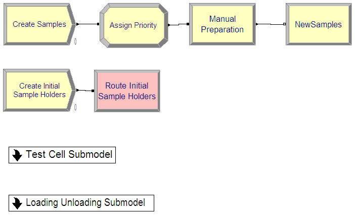
The file, SMTesting.doe, contains the completed model. The logic described in the previous pseudo-code is implemented in the sub-model, Loading Unloading Submodel. The modeling of the alternate logic is also included in this model.
Now that the basic model is completed, you can concentrate on issues related to running and using the results of the model.
8.4.4 Performance Measure Modeling
Of the modeling issues identified at the beginning of this section, the only remaining issues are the collection of the performance statistics and the simulation run parameters. The key performance statistics are related to the system time and the probability of meeting the contract time requirements. These statistics can be readily captured using RECORD modules. The sub-model for the load/unload area has an additional sub-model that implements the collection of these statistics using RECORD modules. Figure 8.27 illustrates this portion of the model. A variable that keeps track of the number of sample holders in use is decremented each time a sample holder drops off a sample (and incremented any time a sample holder picks up a sample). After the sample is dropped off the number of samples completed is recorded with a counter and the system time is tallied with a RECORD module. The overall probability of meeting the 60 minute limit is tallied using a Boolean expression. Then, the probability is recorded according to whether or not the sample was a rush or not.
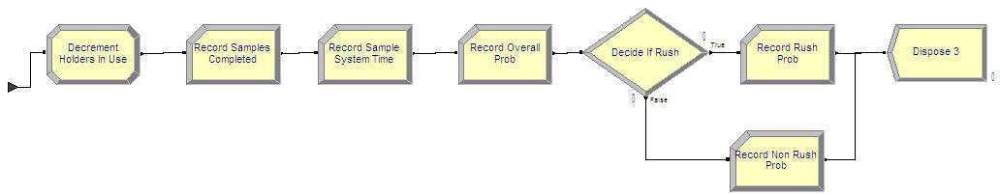
The cost of each configuration can also be tabulated using output statistics (Figure 8.28). Even though there is no randomness in these cost values, these values can be captured to facilitate the use of the Process Analyzer and OptQuest.
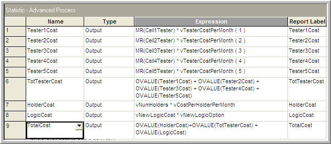
For example, Table 8.14 shows the total monthly cost calculation for the high resource case assuming the use of 16 sample holders.
| Equipment | Cost per month ($) | # units | Total Cost |
|---|---|---|---|
| Tester Type 1 | 10,000 | 2 | $ 20,000 |
| Tester Type 2 | 12,400 | 2 | $ 24,800 |
| Tester Type 3 | 8,500 | 3 | $ 25,500 |
| Tester Type 4 | 9,800 | 4 | $ 39,200 |
| Tester Type 5 | 11,200 | 5 | $ 56,000 |
| Sample Holder | 387 | 16 | $ 6,192 |
| Total | $ 171,692 |
Now that the model has been set up to collect the appropriate statistically quantities, the simulation time horizon and run parameters must be determined for the experiments.
8.5 Simulation Horizon and Run Parameters
The setting of the simulation horizon and the run parameters is challenging within this problem because of lack of guidance on this point from the problem description. Without specific guidance you will have to infer from the problem description how to proceed.
It can be inferred from the problem description that SMTesting is interested in using the new design over a period of time, which may be many months or years. In addition, the problem states that SMTesting wants all cost estimates on a per month basis. In addition, the problem provides that during each day the arrival rate varies by hour of the day, but in the absence of any other information it appears that each day repeats this same non-stationary behavior. Because of the non-stationary behavior during the day, steady-state analysis is inappropriate based solely on data collected during a day. However, since each day repeats, the daily performance of the system may approach steady-state over many days. If the system starts empty and idle on the first day, the performance from the initial days of the simulation may be affected by the initial conditions. This type of situation has been termed steady-state cyclical parameter estimation by (Law, 2007) and is a special case of steady state simulation analysis. Thus, this problem requires an investigation of the effect of initialization bias.
To make this more concrete, let \(X_i\) be the average performance from the \(i^{th}\) day. For example, the average system time from the \(i^{th}\) day. Then, each \(X_i\) is an observation in a time series representing the performance of the system for a sequence of days. If the simulation is executed with a run length of, say 30 days, then the \(X_i\) constitute within replication statistical data, as described in Chapter 3. Thus, when considering the effect of initialization bias, the \(X_i\) need to be examined over multiple replications. Therefore, the warm up period should be in terms of days. The challenge then becomes collecting the daily performance.
There are a number of methods to collect the required daily performance in order to perform an initialization bias analysis. For example, you could create an entity each day and use that entity to record the appropriate performance; however, this would entail special care during the tabulation and would require you to implement the capturing logic for each performance measure of interest. The simplest method is to take advantage of the settings on the Run Setup dialog concerning how the statistics and the system are initialized for each replication.
Let’s go over the implication of these initialization options. Since there are two check boxes, one for whether or not the statistics are cleared at the end of the replication and one for whether or not the system is reset at the beginning of each replication, there are four possible combinations to consider. The four options and their implications are as follows:
Statistics Checked and System Checked: This is the default setting. With this option, the statistics are reset (cleared) at the end of each replication and the system is set back to empty and idle. The net effect is that each replication has independent statistics collected on it and each replication starts in the same (empty and idle) state. If a warm up period is specified, the statistics that are reported are only based on the time after the warm up period. Up until this point, this option has been used throughout the book.
Statistics Unchecked and System Checked: With this option, the system is reset to empty and idle at the end of each replication so that each replication starts in the same state. Since the statistics are unchecked, the statistics will accumulate across the replications. That is, the average performance for the \(j^{th}\) replication includes the performance for all previous replications and the \(j^{th}\) replication. If you were to write out the statistics for the \(j^{th}\) replication, it would be the cumulative average up to and including that replication. If a warm up period is specified, the statistics are cleared at the warm up time and then captured for each replication. Since this clears the accumulation, the net effect of using a warm up period in this case is that the option functions like option 1.
Statistics Checked and System Unchecked: With this option, the statistics are reset (cleared) at the end of each replication, but the system is not reset. That is, each subsequent replication begins its initial state using the final state from the previous replication. The value of TNOW is not reset to zero at the end of each replication. In this situation, the average performance for each replication does not include the performance from the previous replication; however, they are not independent observations since the state of the system was not reset. If a warm up period is specified, a special warm up summary report appears on the standard text based report at the warm up time. After the warm up, the simulation is then run for the specified number of replications for each run length. Based on how option 3 works, an analyst can effectively implement their own batch means method based on time based batch intervals by specifying the replication length as the batching interval. The number of batches is based on the number of replications (after the warm up period).
Statistics Unchecked and System Unchecked: With this option, the statistics are not reset and the system state is not reset. The statistics accumulate across the replications and subsequent replications use the ending state from the previous replication. If a warm up period is specified a special warm up summary report appears on the standard text based report at the warm up time. After the warm up, the simulation is then run for the specified number of replications for each run length.
According to these options, the current simulation can be set up with option 3 with each replication lasting 24 hours and use the number of replications to get the desired number of days of simulation. Since the system is not reset, the variable TNOW is not set back to zero. Thus, each replication causes additional time to evolve during the simulation. The effective run length of the simulation will be determined by the number of days specified for the number of replications. For example, a specification of 60 replications will result in 60 days of simulated time. If the statistics are captured to a file for each replication (day), then the performance by day will be available to analyze for initialization bias.
One additional problem in determining the warm up period is the fact that there will be many design configurations to be examined. Thus, a warm up period will need to be picked that will work on the range of design configurations that will be considered; otherwise, a warm up analysis will have to be performed for every design configuration. In what follows, the effect of initialization bias will be examined to try to find a warm up period that will work well across a wide variety of design configurations.
The model was modified to run the high resource case from Table 8.14 using 48 sample holders. In addition, the model was modified so that the distributions were parameterized by a stream number. This was done so that separate invocations of the program would generate different sample paths. An output statistic was defined to capture the average daily system time for each of the replications and the model was executed 10 different times after adjusting the stream numbers to get 10 independent sample paths of 60 days in length. The ten sample paths were averaged to produce a Welch plot as shown in Figure 8.29. From the plot, there is no discernible initialization bias. Thus, it appears that if the system has enough resources, there does not seem to be a need for a warm up period.
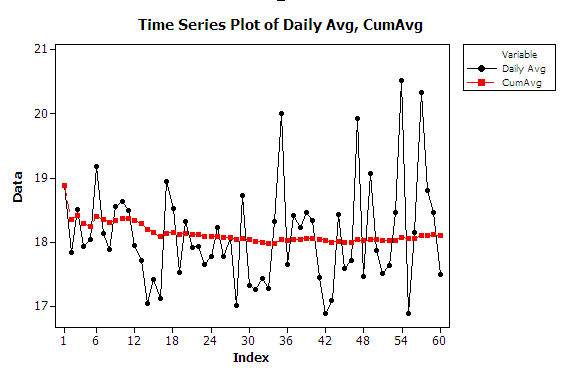
If we run the low resource case of Table 8.13 under the same conditions, an execution error will occur that indicates that the maximum number of entities for the professional version of is exceeded. In this case, the overall arrival rate is too high for the available resources in the model. The samples build up in the queues (especially the input queue) and unprocessed samples will be carried forward each day, eventually building up to a point that exceeds the number of entities permitted. Thus, it should be clear that in the under resourced case the performance measures cannot reach steady state. Whether or not a warm up period is set for these cases, they will naturally be excluded as design alternatives because of exceptionally poor performance. Therefore, setting a warm up period for under capacitated design configurations appears unnecessary. Based on this analysis, a 1 day warm up period will be used to be very conservative across all of the design configurations.
The run setup parameter settings for the initialization bias investigation do not necessarily apply to further experiments. In particular, with the \(3^{rd}\) option, the days are technically within replication data. Option 1 appears to be applicable to future experiments. For option 1, the run length and the number of replications for the experiments need to be determined. The batch means method based on 1 long replication of many days or the method of replication deletion can be utilized in this situation. Because you might want to use the Process Analyzer and possibly OptQuest during the analysis, the method of replication deletion may be more appropriate. Based on the rule of thumb in (Banks et al., 2005), the run length should be at least 10 times the amount of data deleted. Because 1 day of data is being deleted, the run length should be set to 11 days so that a total of 10 days of data will be collected. Now, the number of replications needs to be determined.
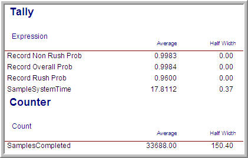
Using the high resource case with 48 sample holders a pilot run was made of 5 replications of 11 days with 1 day warm up. The user-defined results of this run are shown in Figure 8.30. As indicated in the figure, there were a large number of samples completed during each 10 day period and the half-widths of the performance measures are already very acceptable with only 5 replications. Thus, 5 replications will be used in all the experiments that follow. Because other configurations may have more variability and thus require more than 5 replications, a risk is being taken that adequate decisions will be able to be made across all design configurations. Thus, a trade-off is being made between the additional time that pilot runs would entail and the risks associated with making a valid decision.
8.6 Preliminary Experimental Analysis
Before proceeding with a full scale investigation, it will be useful to do two things. First, an assessment for the number of required sample holders is needed. This will provide a range of values to consider during the design alternative search. The second issue is to examine the lower bounds on the required number testers at each test cell. The desire is to prevent a woefully under capacitated system from being examined (either in the Process Analyzer or in an OptQuest run). The execution of a woefully under capacitated system may cause an execution error that may require the experiments to have to be re-done. The analysis files associated with this and subsequent sections are available in the chapter files.
Based on Table 8.13, in order to keep the testers busy in the high resource case, the system would need to have at least (2 + 2 + 3 + 4 + 5 = 16) sample holders, one sample holder to keep each unit of each test cell busy. To investigate the effect of sample holders on the system, a set of experiments was run using the Process Analyzer on the high resource case with the number of sample holders steadily decreasing down to 16 sample holders. The results from this initial analysis are shown in Table 8.15. As can be seen in the table, the performance of the system degrades significantly if the number of sample holders goes below 16. In addition, it should be clear that for the high resource settings the system is easily capable of meeting the design requirements. Also, it is clear that too many sample holders can be detrimental to the system time. Thus, a good range for the number of sample holders appears to be from 20 to 36.
The low resource case was also explored for the cases of 16 and 48 sample holders. The system appears to be highly under capacitated at the low resource setting. Since the models were able to execute for the entire run length of 10 days, this provides evidence that any scenarios that have more resources will also be able to execute without any problems.
| Cell 1 | Cell 2 | Cell 3 | Cell 4 | Cell 5 | #Holders | Non-Rush | Rush | (minutes) |
|---|---|---|---|---|---|---|---|---|
| 2 | 2 | 3 | 4 | 5 | 48 | 0.998 | 0.960 | 17.811 |
| 2 | 2 | 3 | 4 | 5 | 44 | 0.997 | 0.971 | 17.182 |
| 2 | 2 | 3 | 4 | 5 | 40 | 0.994 | 0.976 | 17.046 |
| 2 | 2 | 3 | 4 | 5 | 36 | 0.994 | 0.983 | 16.588 |
| 2 | 2 | 3 | 4 | 5 | 32 | 0.996 | 0.982 | 16.577 |
| 2 | 2 | 3 | 4 | 5 | 28 | 0.995 | 0.986 | 16.345 |
| 2 | 2 | 3 | 4 | 5 | 24 | 0.988 | 0.990 | 16.355 |
| 2 | 2 | 3 | 4 | 5 | 20 | 0.961 | 0.991 | 21.431 |
| 2 | 2 | 3 | 4 | 5 | 18 | 0.822 | 0.987 | 32.839 |
| 2 | 2 | 3 | 4 | 5 | 17 | 0.721 | 0.990 | 39.989 |
| 2 | 2 | 3 | 4 | 5 | 16 | 0.494 | 0.989 | 57.565 |
| 2 | 2 | 3 | 4 | 5 | 12 | 0.000 | 0.988 | 1309.683 |
| 1 | 1 | 2 | 2 | 3 | 16 | 0.000 | 0.985 | 2525.434 |
| 1 | 1 | 2 | 2 | 3 | 48 | 0.000 | 0.749 | 2234.676 |
Based on the preliminary results, you should feel confident enough to design experiments and proceed with an analysis of the problem in order to make a recommendation. These experiments are described in the next section.
8.7 Final Experimental Analysis and Results
While the high capacity system has no problem achieving good system time performance, it will also be the most expensive configuration. Therefore, there is a clear trade off between increased cost and improved customer service. Thus, a system configuration that has the minimum cost while also obtaining desired performance needs to be recommended. This situation can be analyzed in a number of ways using the Process Analyzer and OptQuest within the environment. Often both tools are used to solve the problem. Typically, in an OptQuest analysis, an initial set of screening experiments may be run using the Process Analyzer to get a good idea on the bounds for the problem. Some of this analysis has already been done. See for example Table 8.15. Then, after an OptQuest analysis has been performed, additional experiments might be made via the Process Analyzer to hone the solution space. If only the Process Analyzer is to be used, then a carefully thought out set of experiments can do the job. For teaching purposes, this section will illustrate how to use both the Process Analyzer and OptQuest on this problem.
The contest problem also proposes the use of additional logic to improve the system’s performance on rush samples. In a strict sense, this provides another factor (or design parameter) to consider during the analysis. The inclusion of another factor can dramatically increase the number of experiments to be examined. Because of this, an assumption will be made that the additional logic does not significantly interact with the other factors in the model. If this assumption is true, the original system can be optimized to find a basic design configuration. Then, the additional logic can be analyzed to check if it adds value to the basic solution. In order to recommend a solution, a trade off between cost and system performance must be established. Since the problem specification desires that:
From this simulation study, we would like to know what configuration would provide the most cost-effective solution while achieving high customer satisfaction. Ideally, we would always like to provide results in less time than the contract requires. However, we also do not feel that the system should include extra equipment just to handle the rare occurrence of a late report.
The objective is clear here: minimize total cost. In order to make the occurrence of a late report rare, limits can be set on the probability that the rush and non-rush sample’s system times exceed the contract limits. This can be done by arbitrarily defining rare as 3 out of 100 samples being late. Thus, at least 97% of the non-rush and rush samples must meet the contract requirements.
8.7.1 Using the Process Analyzer on the Problem
This section uses the Process Analyzer on the problem within an experimental design paradigm. Further information on experimental design methods can be found in (Montgomery & Runger, 2006). For a discussion of experimental design within a simulation context, please see (Law, 2007) or (Kleijnen, 1998). There are 6 factors (# units for each of the 5 testing cells and the number of sample holders). To initiate the analysis, a factorial experiment can be used. As shown in Table 8.16, the previously determined resource requirements can be readily used as the low and high settings for the test cells. In addition, the previously determined lower and upper range values for the number of sample holders can be used as the levels for the sample holders.
| Factor | Low | High |
|---|---|---|
| Cell 1 # units | 1 | 2 |
| Cell 2 # units | 1 | 2 |
| Cell 3 # units | 2 | 3 |
| Cell 4 # units | 2 | 4 |
| Cell 5 # units | 3 | 5 |
| # holders | 20 | 36 |
This amounts to \(2^6\) = 64 experiments; however, since sample holders have a cost, it makes sense to first run the half-fraction of the experiment associated with the lower level of the number of holders to see how the test cell resource levels interact. The results for the first half-fraction are shown in Table 8.17. The first readily apparent conclusion that can be drawn from this table is that test cells 1 and 2 must have at least two units of resource capacity. Now, considering cases (2, 2, 2, 4, 5) and (2, 2, 3, 4, 5) it is very likely that test cell # 3 requires 3 units of resource capacity in order to meet the contract requirements. Lastly, it is very clear that the low levels for cell’s 4 and 5 are not acceptable. Thus, the search range can be narrowed down to 3 and 4 units of capacity for cell 4 and to 4 and 5 units of capacity for cell 5.
The other half-fraction with the number of samples at 36 is presented in Table 8.18. The same basic conclusions concerning the resources at the test cells can be made by examining the results. In addition, it is apparent that the number of sample holder can have a significant effect on the performance of the system. It appears that more sample holders hurt the performance of the under capacitated configurations. The effect of the number of sample holders for the highly capacitated systems is some what mixed, but generally the results indicate that 36 sample holders are probably too many for this system. Of course, since this has all been done within an experimental design context, more rigorous statistical tests can be performed to fully test these conclusions. These tests will not do that here, but rather the results will be used to set up another experimental design that can help to better examine the system’s response.
| 1 | 2 | 3 | 4 | 5 | #Holders | Non-Rush | Rush | Time | Cost |
|---|---|---|---|---|---|---|---|---|---|
| 1 | 1 | 2 | 2 | 3 | 20 | 0.000 | 0.963 | 2410.517 | 100340 |
| 2 | 1 | 2 | 2 | 3 | 20 | 0.000 | 0.966 | 2333.135 | 110340 |
| 1 | 2 | 2 | 2 | 3 | 20 | 0.000 | 0.980 | 1913.694 | 112740 |
| 2 | 2 | 2 | 2 | 3 | 20 | 0.000 | 0.973 | 1904.499 | 122740 |
| 1 | 1 | 3 | 2 | 3 | 20 | 0.000 | 0.966 | 2373.574 | 108840 |
| 2 | 1 | 3 | 2 | 3 | 20 | 0.000 | 0.962 | 2407.404 | 118840 |
| 1 | 2 | 3 | 2 | 3 | 20 | 0.000 | 0.973 | 1902.445 | 121240 |
| 2 | 2 | 3 | 2 | 3 | 20 | 0.000 | 0.978 | 1865.821 | 131240 |
| 1 | 1 | 2 | 4 | 3 | 20 | 0.000 | 0.951 | 2332.412 | 119940 |
| 2 | 1 | 2 | 4 | 3 | 20 | 0.000 | 0.949 | 2365.047 | 129940 |
| 1 | 2 | 2 | 4 | 3 | 20 | 0.003 | 0.985 | 496.292 | 132340 |
| 2 | 2 | 2 | 4 | 3 | 20 | 0.025 | 0.986 | 284.205 | 142340 |
| 1 | 1 | 3 | 4 | 3 | 20 | 0.000 | 0.956 | 2347.050 | 128440 |
| 2 | 1 | 3 | 4 | 3 | 20 | 0.000 | 0.956 | 2316.931 | 138440 |
| 1 | 2 | 3 | 4 | 3 | 20 | 0.019 | 0.984 | 364.081 | 140840 |
| 2 | 2 | 3 | 4 | 3 | 20 | 0.122 | 0.987 | 157.798 | 150840 |
| 1 | 1 | 2 | 2 | 5 | 20 | 0.000 | 0.968 | 2394.530 | 122740 |
| 2 | 1 | 2 | 2 | 5 | 20 | 0.000 | 0.965 | 2360.751 | 132740 |
| 1 | 2 | 2 | 2 | 5 | 20 | 0.000 | 0.980 | 1873.405 | 135140 |
| 2 | 2 | 2 | 2 | 5 | 20 | 0.000 | 0.982 | 1865.020 | 145140 |
| 1 | 1 | 3 | 2 | 5 | 20 | 0.000 | 0.963 | 2391.649 | 131240 |
| 2 | 1 | 3 | 2 | 5 | 20 | 0.000 | 0.965 | 2361.708 | 141240 |
| 1 | 2 | 3 | 2 | 5 | 20 | 0.000 | 0.974 | 1926.889 | 143640 |
| 2 | 2 | 3 | 2 | 5 | 20 | 0.000 | 0.980 | 1841.387 | 153640 |
| 1 | 1 | 2 | 4 | 5 | 20 | 0.000 | 0.951 | 2387.810 | 142340 |
| 2 | 1 | 2 | 4 | 5 | 20 | 0.000 | 0.955 | 2352.933 | 152340 |
| 1 | 2 | 2 | 4 | 5 | 20 | 0.202 | 0.986 | 121.199 | 154740 |
| 2 | 2 | 2 | 4 | 5 | 20 | 0.683 | 0.991 | 43.297 | 164740 |
| 1 | 1 | 3 | 4 | 5 | 20 | 0.000 | 0.954 | 2291.880 | 150840 |
| 2 | 1 | 3 | 4 | 5 | 20 | 0.000 | 0.947 | 2332.031 | 160840 |
| 1 | 2 | 3 | 4 | 5 | 20 | 0.439 | 0.985 | 69.218 | 163240 |
| 2 | 2 | 3 | 4 | 5 | 20 | 0.961 | 0.991 | 21.431 | 173240 |
| 1 | 2 | 3 | 4 | 5 | #Holders | Non-Rush | Rush | Time | Cost |
|---|---|---|---|---|---|---|---|---|---|
| 1 | 1 | 2 | 2 | 3 | 36 | 0.000 | 0.776 | 2319.323 | 106532 |
| 2 | 1 | 2 | 2 | 3 | 36 | 0.000 | 0.764 | 2260.829 | 116532 |
| 1 | 2 | 2 | 2 | 3 | 36 | 0.000 | 0.729 | 1816.568 | 118932 |
| 2 | 2 | 2 | 2 | 3 | 36 | 0.000 | 0.714 | 1779.530 | 128932 |
| 1 | 1 | 3 | 2 | 3 | 36 | 0.000 | 0.768 | 2238.654 | 115032 |
| 2 | 1 | 3 | 2 | 3 | 36 | 0.000 | 0.775 | 2243.560 | 125032 |
| 1 | 2 | 3 | 2 | 3 | 36 | 0.000 | 0.730 | 1762.579 | 127432 |
| 2 | 2 | 3 | 2 | 3 | 36 | 0.000 | 0.717 | 1763.306 | 137432 |
| 1 | 1 | 2 | 4 | 3 | 36 | 0.000 | 0.796 | 2244.243 | 126132 |
| 2 | 1 | 2 | 4 | 3 | 36 | 0.000 | 0.790 | 2268.549 | 136132 |
| 1 | 2 | 2 | 4 | 3 | 36 | 0.202 | 0.900 | 111.232 | 138532 |
| 2 | 2 | 2 | 4 | 3 | 36 | 0.385 | 0.915 | 72.860 | 148532 |
| 1 | 1 | 3 | 4 | 3 | 36 | 0.000 | 0.806 | 2255.190 | 134632 |
| 2 | 1 | 3 | 4 | 3 | 36 | 0.000 | 0.795 | 2251.548 | 144632 |
| 1 | 2 | 3 | 4 | 3 | 36 | 0.360 | 0.899 | 76.398 | 147032 |
| 2 | 2 | 3 | 4 | 3 | 36 | 0.405 | 0.911 | 68.676 | 157032 |
| 1 | 1 | 2 | 2 | 5 | 36 | 0.000 | 0.771 | 2304.784 | 128932 |
| 2 | 1 | 2 | 2 | 5 | 36 | 0.000 | 0.771 | 2250.198 | 138932 |
| 1 | 2 | 2 | 2 | 5 | 36 | 0.000 | 0.738 | 1753.819 | 141332 |
| 2 | 2 | 2 | 2 | 5 | 36 | 0.000 | 0.717 | 1751.676 | 151332 |
| 1 | 1 | 3 | 2 | 5 | 36 | 0.000 | 0.780 | 2251.174 | 137432 |
| 2 | 1 | 3 | 2 | 5 | 36 | 0.000 | 0.771 | 2252.106 | 147432 |
| 1 | 2 | 3 | 2 | 5 | 36 | 0.000 | 0.726 | 1781.024 | 149832 |
| 2 | 2 | 3 | 2 | 5 | 36 | 0.000 | 0.716 | 1794.930 | 159832 |
| 1 | 1 | 2 | 4 | 5 | 36 | 0.000 | 0.787 | 2243.338 | 148532 |
| 2 | 1 | 2 | 4 | 5 | 36 | 0.000 | 0.794 | 2243.558 | 158532 |
| 1 | 2 | 2 | 4 | 5 | 36 | 0.541 | 0.897 | 54.742 | 160932 |
| 2 | 2 | 2 | 4 | 5 | 36 | 0.898 | 0.932 | 28.974 | 170932 |
| 1 | 1 | 3 | 4 | 5 | 36 | 0.000 | 0.791 | 2263.484 | 157032 |
| 2 | 1 | 3 | 4 | 5 | 36 | 0.000 | 0.799 | 2278.707 | 167032 |
| 1 | 2 | 3 | 4 | 5 | 36 | 0.604 | 0.884 | 49.457 | 169432 |
| 2 | 2 | 3 | 4 | 5 | 36 | 0.994 | 0.983 | 16.588 | 179432 |
Using the initial results in Table 8.15 and the analysis of the two half-fraction experiments, another set of experiments were designed to focus in on the capacities for cells 3, 4, and 5. The experiments are given in Table 8.19. This set of experiments is a \(2^4\) = 16 factorial experiment. The results are shown in Table 8.20. The results have been sorted such that the systems that have the higher chance of meeting the contract requirements are at the top of the table. From the results, it should be clear that cell 3 requires at least 3 units of capacity for the system to be able to meet the requirements. It is also very likely that cell 4 requires 4 testers to meet the requirements. Thus, the search space has been narrowed to either 4 or 5 testers at cell 5 and between 20 and 24 holders.
| Factor | Low | High |
|---|---|---|
| Cell 3 # units | 2 | 3 |
| Cell 4 # units | 3 | 4 |
| Cell 5 # units | 4 | 5 |
| # holders | 20 | 24 |
| 1 | 2 | 3 | 4 | 5 | #Holders | Non-Rush | Rush | Time | Cost |
|---|---|---|---|---|---|---|---|---|---|
| 2 | 2 | 3 | 4 | 5 | 24 | 0.988 | 0.990 | 16.355 | 174788 |
| 2 | 2 | 3 | 4 | 4 | 24 | 0.970 | 0.988 | 19.410 | 163588 |
| 2 | 2 | 3 | 4 | 5 | 20 | 0.961 | 0.991 | 21.431 | 173240 |
| 2 | 2 | 3 | 4 | 4 | 20 | 0.945 | 0.989 | 25.270 | 162040 |
| 2 | 2 | 3 | 3 | 4 | 24 | 0.877 | 0.987 | 30.345 | 153788 |
| 2 | 2 | 3 | 3 | 5 | 24 | 0.871 | 0.988 | 31.244 | 164988 |
| 2 | 2 | 2 | 4 | 5 | 24 | 0.812 | 0.984 | 34.065 | 166288 |
| 2 | 2 | 2 | 4 | 4 | 24 | 0.782 | 0.986 | 35.289 | 155088 |
| 2 | 2 | 3 | 3 | 5 | 20 | 0.734 | 0.991 | 39.328 | 163440 |
| 2 | 2 | 3 | 3 | 4 | 20 | 0.731 | 0.992 | 40.370 | 152240 |
| 2 | 2 | 2 | 3 | 4 | 24 | 0.687 | 0.987 | 42.891 | 145288 |
| 2 | 2 | 2 | 4 | 5 | 20 | 0.683 | 0.991 | 43.297 | 164740 |
| 2 | 2 | 2 | 3 | 5 | 24 | 0.656 | 0.980 | 46.049 | 156488 |
| 2 | 2 | 2 | 4 | 4 | 20 | 0.627 | 0.989 | 45.708 | 153540 |
| 2 | 2 | 2 | 3 | 5 | 20 | 0.561 | 0.987 | 52.710 | 154940 |
| 2 | 2 | 2 | 3 | 4 | 20 | 0.492 | 0.985 | 59.671 | 143740 |
To finalize the selection of the best configuration for the current situation, ten experimental combinations of cell 5 resource capacity (4, 5) and number of sample holders (20, 21, 22, 23, 24) were run in the Process Analyzer using 10 replications for each scenario. The results of the experiments are shown in Table 8.21. In addition, the multiple comparison procedure was applied to the results based on picking the solution with the best (highest) non-rush probability. The results of that comparison are shown in Figure 8.31. The multiple comparison procedure indicates with 95% confidence that scenarios 3, 4, 5, 7, 8, 9, 10 are the best. Since there is essentially no difference between them, the cheapest configuration can be chosen, which is scenario 3 with factor levels of (2, 3, 3, 4, 4, and 22) and a total cost of $162, 814.
Based on the results of this section, a solid solution for the problem has been determined; however, to give you experience applying OptQuest to a problem, let us examine its application to this situation.
| Scenario | 1 | 2 | 3 | 4 | 5 | #Holders | Non-Rush | Rush | Time | Cost |
|---|---|---|---|---|---|---|---|---|---|---|
| 1 | 2 | 2 | 3 | 4 | 4 | 20 | 0.917 | 0.987 | 26.539 | 162040 |
| 2 | 2 | 2 | 3 | 4 | 4 | 21 | 0.942 | 0.987 | 23.273 | 162427 |
| 3 | 2 | 2 | 3 | 4 | 4 | 22 | 0.976 | 0.989 | 20.125 | 162814 |
| 4 | 2 | 2 | 3 | 4 | 4 | 23 | 0.974 | 0.988 | 19.983 | 163201 |
| 5 | 2 | 2 | 3 | 4 | 4 | 24 | 0.979 | 0.989 | 18.512 | 163588 |
| 6 | 2 | 2 | 3 | 4 | 5 | 20 | 0.958 | 0.988 | 21.792 | 173240 |
| 7 | 2 | 2 | 3 | 4 | 5 | 21 | 0.967 | 0.987 | 19.362 | 173627 |
| 8 | 2 | 2 | 3 | 4 | 5 | 22 | 0.984 | 0.988 | 18.022 | 174014 |
| 9 | 2 | 2 | 3 | 4 | 5 | 23 | 0.986 | 0.988 | 16.971 | 174401 |
| 10 | 2 | 2 | 3 | 4 | 5 | 24 | 0.980 | 0.987 | 16.996 | 174788 |
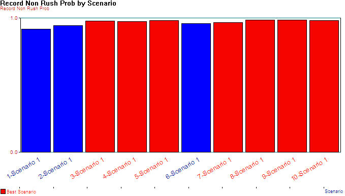
8.7.2 Using OptQuest on the Problem
OptQuest is an add-on program for Arena which provides heuristic based simulation optimization capabilities. You can find OptQuest on Tools \(>\) OptQuest. OptQuest will open up and you should see a dialog asking you whether you want to browse for an already formulated optimization run or to start a new optimization run. Select the start new optimization run button. OptQuest will then read your model and start a new optimization model, which may take a few seconds, depending on the size of your model. OptQuest is similar to the Process Analyzer in some respects. It allows you to define controls and responses for your model. Then you can develop an optimization function that will be used to evaluate the system under the various controls. In addition, you can define a set of constraints that must not be violated by the final recommended solution to the optimization model. It is beyond the scope of this example to fully describe simulation optimization and all the intricacies of this technology. The interested reader should refer to April et al. (2001) and Glover et al. (1999) for more information on this technology. This example will simply illustrate the possibilities of using this technology. A tutorial on the use of OptQuest is available in the OptQuest help files.
As shown in Figure 8.32, OptQuest for can be used to define controls and responses and to setup an optimization model to minimize total cost subject to the probability of non-rush and rush samples meeting the contract requirements being greater than or equal to 0.97. When running OptQuest, it is a good idea to try to give OptQuest a good starting point. Since the high resource case is already known to be feasible from the pilot experiments, the optimization can be started using the high resource case and the number of sample holders within the middle of their range (e.g. 27 sample holders).
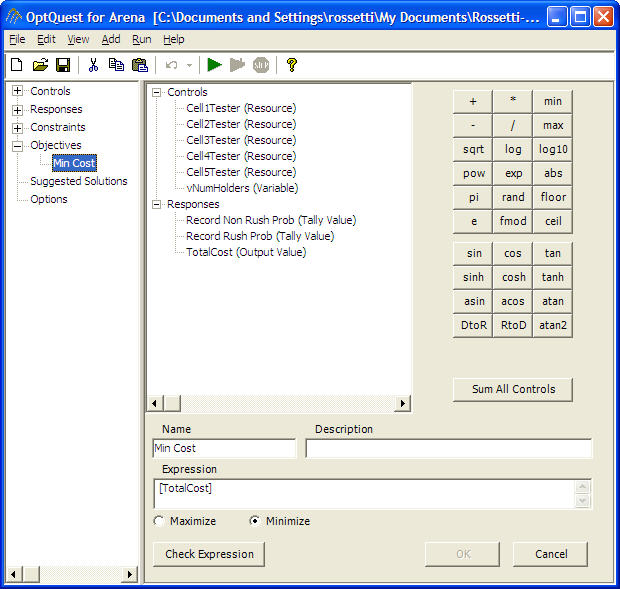
The simulation optimization was executed over a period of about 6 hours (wall clock time) until it was manually stopped after 79 total simulations. From Figure 8.33, the best solution was 2 testers at cells 1 and 2, 3 testers at cell 3, 4 testers at cells 4 and 5, and 23 sample holders. The total cost of this configuration is $163, 201. This solution has 1 more sample holder as compared to the solution based on the Process Analyzer. Of course, you would not know this if the analysis was based solely on OptQuest. OptQuest allows top solutions to be saved to a file. Upon looking at those solutions it becomes clear that the heuristic in OptQuest has found the basic configuration for the test cells (2, 2, 3, 4, 4) and is investigating the number of sample holders. If the optimization had been allowed to run longer it is very likely that it would have recommended 22 sample holders. At this stage, the Process Analyzer can be used to hone in on the recommended OptQuest solution by more closely examining the final set of “best” solutions. Since that has already been done in the previous section, it will not be included here.
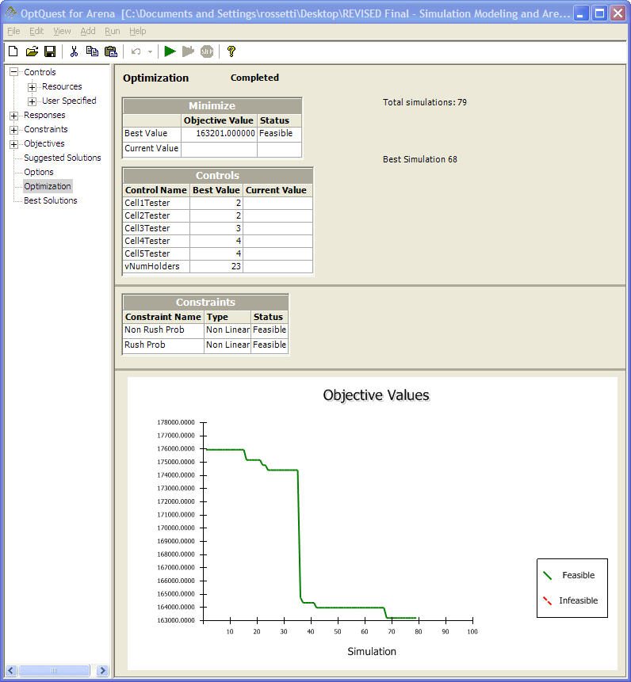
8.7.3 Investigating the New Logic Alternative
Now that a recommended basic configuration is available, the alternative logic needs to be checked to see if it can improve performance for the additional cost. In addition, the suggested number for the control logic should be determined. The basic model can be easily modified to contain the alternative logic. This was done within the load/unload sub-model. In addition, a flag variable was used to be able to turn on or turn off the use of the new logic so that the Process Analyzer can control whether or not the logic is included in the model. The implementation can be found in the file, SMTesting.doe.
To reduce the number of factors involved in the previous analysis, it was assumed that the new logic did not interact significantly with the allocation of the test cell capacity; however, because the suggested number checks for how many samples are waiting at the load/unload station, there may be some interaction between these factors. Based on these assumptions, 10 scenarios with the new logic were designed for the recommended tester configuration (2, 2, 3, 4, 4) varying the number of holders between 20 and 24 with the suggested number (SN) set at both 2 and 3. TTable Table 8.22 presents the results of these experiments. From the results, it is clear that the new logic does not have a substantial impact on the probability of meeting the contract for the non-rush and rush samples. In fact, looking at scenario 3, the new logic may actually hurt the non-rush samples. To complete the analysis, a more rigorous statistical comparison should be performed; however, that task will be skipped for the sake of brevity.
| Scenario | 1 | 2 | 3 | 4 | 5 | #Holders | SN | Non-Rush | Rush | Time |
|---|---|---|---|---|---|---|---|---|---|---|
| 1 | 2 | 2 | 3 | 4 | 4 | 20 | 2 | 0.937 | 0.989 | 23.937 |
| 2 | 2 | 2 | 3 | 4 | 4 | 21 | 2 | 0.956 | 0.988 | 21.461 |
| 3 | 2 | 2 | 3 | 4 | 4 | 22 | 2 | 0.957 | 0.989 | 21.159 |
| 4 | 2 | 2 | 3 | 4 | 4 | 23 | 2 | 0.972 | 0.989 | 19.011 |
| 5 | 2 | 2 | 3 | 4 | 4 | 24 | 2 | 0.975 | 0.986 | 18.665 |
| 6 | 2 | 2 | 3 | 4 | 4 | 20 | 3 | 0.926 | 0.989 | 25.305 |
| 7 | 2 | 2 | 3 | 4 | 4 | 21 | 3 | 0.948 | 0.988 | 22.449 |
| 8 | 2 | 2 | 3 | 4 | 4 | 22 | 3 | 0.968 | 0.989 | 20.536 |
| 9 | 2 | 2 | 3 | 4 | 4 | 23 | 3 | 0.983 | 0.988 | 18.591 |
| 10 | 2 | 2 | 3 | 4 | 4 | 24 | 3 | 0.986 | 0.987 | 18.170 |
After all the analysis, the results indicate that SMTesting should proceed with the (2, 2, 3, 4, 4) configuration with 22 sample holders for a total cost of $162, 814. The additional one-time purchase of the control logic is not warranted at this time.
8.7.4 Sensitivity Analysis
This realistically sized case study clearly demonstrates the application of simulation to designing a manufacturing system. The application of simulation was crucial in this analysis because of the complex, dynamic relationships between the elements of the system and because of the inherent stochastic environment (e.g. arrivals, breakdowns, etc.) that were in the problem. Based on the analysis performed for the case study, SMTesting should be confident that the recommended design will suffice for the current situation. However, there are a number of additional steps that can (and probably should) be performed for the problem.
In particular, to have even more confidence in the design, simulation offers the ability to perform a sensitivity analysis on the “uncontrollable" factors in the environment. While the analysis in the previous section concentrated on the design parameters that can be controlled, it is very useful to examine the sensitivity of other factors and assumptions on the recommended solution. Now that a verified and validated model is in place, the arrival rates, the breakdown rates, repair times, the buffer sizes, etc. can all be varied to see how they affect the recommendation. In addition, a number of explicit and implicit assumptions were made during the modeling and analysis of the contest problem. For example, when modeling the breakdowns of the testers, the FAILURE module was used. This module assumes that when a failure occurs that all units of the resource become failed. This may not actually be the case. In order to model individual unit failures, the model must be modified. After the modification, the assumption can be tested to see if it makes a difference with respect to the recommended solution. Other aspects of the situation were also omitted. For example, the fact that tests may have to be repeated at test cells was left out due to the fact that no information was given as to the likelihood for repeating the test. This situation could be modeled and a re-test probability assumed. Then, the sensitivity to this assumption could be examined.
In addition to modeling assumptions, assumptions were made during the experimental analysis. For example, basic resource configuration of (2, 2, 3, 4, 4) was assumed to not change if the control logic was introduced. This can also be tested within a sensitivity analysis. Since performing a sensitivity analysis has been discussed in previously in this chapter the mechanics of performing sensitivity analysis will not be discussed here. A number of exercises will ask you to explore these issues.
8.8 Completing the Project
A major aspect of the use of simulation is convincing the key decision makers concerning the recommendations of the study. Developing an animation for the model is especially useful in this regard. For the SMTesting model, an animation is available within the file. The animation (Figure 8.34) animates the conveyor, the usage of the resources, queues, and has a number of variables for monitoring the system. In addition, user defined views were defined for easily viewing the animation and the model logic.
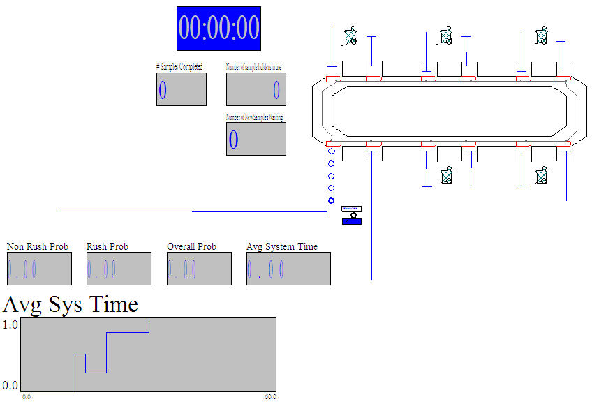
A written report is also a key requirement of a simulation project. (Chung, 2004) provides some guidelines for the report and a presentation associated with a project. An outline for a simulation project report is provided here.
Executive Summary
Provide a brief summary of the problem, method, results, and recommendation. It should be oriented towards the decision maker.
A good executive summary should have the following characteristics: Essential facts of problem provided; methods of analysis summarized succinctly; recommendations clearly tied to results, clear decision recommended; essential trade-offs provided in terms of key performance measures; decision maker knows what to do after reading the summary.
Introduction
- Provide a brief overview of the system and problem context. Orient the reader as to what should be expected from the report.
System and Problem Description
- Describe the system under study. The system should be described in such a way that an analyst could develop a model from the description. Describe the problem to be solved. Indicate the key performance metrics to be used to make the decision and the major goals/objectives to be achieved. For example, the contest problem description given in this chapter is an excellent example of describing the system and the problem.
Solution and Modeling Approach
Describe the modeling issues that needed to be solved. Describe the inputs for the model and how they were developed. For each major modeling issue you should describe briefly your conceptual approach. Relate your description to the system description. Provide activity diagrams or pseudo-code and describe how this relates to your conceptual model. Describe the major outputs from the model and how they are collected.
Describe the overall flow of the model and relate this to your conceptual model. Give an accounting of important modeling logic where the detail is necessary to help the reader understand a tricky issue or important modeling issue.
State relevant and important assumptions. Discuss their potential effect on your answers and any procedures you took to test your assumptions.
Describe any verification/validation procedures. Describe your up-front analysis. You might approximate parts of your model or do some basic calculations that give you a ballpark idea of the range of your outputs. If you have data from the system concerning expected outputs, then you should compare the simulation output to the system output using statistical techniques. For a more detailed discussion of these techniques, please see the excellent discussion in (Balci, 1998).
Experimentation and Analysis
Describe a typical simulation run. Is the model a finite horizon or steady state model? Analyzed by replication method or batch means? If it is a steady state simulation, how did you handle the initial transient period? How did you determine the run length? The number of replications? Describe or reference any special statistical methods that you used so that the reader can understand your results.
Describe your experimental plan and the results. What are your factors and the levels? What are you varying in the model? What are you capturing as output? Describe the results from your experiments. Use figures and tables and refer to them in your text to explain the meaning of the results. Discuss the effect of assumptions, sensitivity analysis and their effect on the model’s results.
Conclusions and Recommendations
- Give the answers to the problem. Back up your recommendations based on your results and analysis. If possible, give the solution in the form of alternatives. For example: “Assuming X, we recommend Y because of Z” or “Given results X, Y, we recommend Z”
References
Appendix
- Supporting materials. Detailed computer model documentation.
In addition to the above material, a simulation report might also contain plans for how to implement the recommendations. A presentation covering the major issues and recommendations from the report should also be prepared. You can think of the presentation as a somewhat expanded version of the executive summary of the report. It should concentrate on building credibility for your analysis, the results, and the recommendations. You should consider using your animation during the presentation as a tool for building credibility and understanding for what was modeled.
Besides the model, written report, presentation, and animation, it is extremely useful to provide model/user documentation. To assist with some of the documentation, you might investigate the Model Documentation Report available on the Tools menu. This tool produces an organized listing of the modules within the model. However, this tool is no substitute for fully describing the model in a language independent manner within your report. Even if non-simulation oriented users will not be interacting with the model, it is very useful to have a users guide to the model of some sort. This document should describe how to run the model, what inputs to modify, and what outputs to examine, etc. Often a model built for a single use is re-discovered and used for additional analysis. A users guide becomes extremely useful in these situations.
8.9 Some Final Thoughts
This chapter presented how to apply simulation to a realistic problem. The solution involved many of the simulation modeling techniques that you learned throughout the text. In addition, and its supporting tools were applied to develop a model for the problem and to analyze the system under study. Finally, experimental design concepts were applied in order to recommend design alternatives for the problem. This comprehensive example should give you a good understanding for how to apply simulation in the real world.
There are a number of other issues in simulation that have not been given full description within this text. However, based on the material in this text, you should be well prepared to apply simulation to problems in engineering and business. To continue your education in simulation, you should consider reading (Chung, 2004) and (Banks, 1998). Chapter 13 of (Chung, 2004) provides a number of examples of the application simulation, and Chapters 14-21 of (Banks, 1998) illustrate simulation in areas such as health care, the military, logistics, and manufacturing. In addition, Chapters 22 and 23 of (Banks, 1998) provide excellent practical advice on how to perform and manage a successful simulation project.
Finally, you should get involved in professional societies and organizations that support simulation modeling and analysis, such as:
American Statistical Association (ASA)
Association for Computing Machinery: Special Interest Group on Simulation (ACM/SIGSIM)
Institute of Electrical and Electronics Engineers: Systems, Man, and Cybernetics Society (IEEE/SMC)
Institute for Operations Research and the Management Sciences: Simulation Society (INFORMS-SIM)
Institute of Industrial Engineers (IIE)
National Institute of Standards and Technology (NIST)
The Society for Modeling and Simulation International (SCS)
An excellent opportunity to get involved is through the Winter Simulation Conference. You can find information concerning these organizations and the Winter Simulation Conference easily through the internet.
As a final thought you should try to adhere to the following rules during your practice of simulation:
To only perform simulation studies that have clearly defined objectives and performance metrics.
To never perform a simulation study when the problem can be solved through simpler and more direct techniques.
To always carefully plan, collect, and analyze the data necessary to develop good input distributions for simulation models.
To never accept simulation results or decisions based on a sample size of one.
To always use statistically valid methods to determine the sample size for simulation experiments.
To always check that statistical assumptions (e.g. independence, normality, etc.) are reasonably valid before reporting simulation results.
To always provide simulation results by reporting the sample size, the sample average, and a measure of sample variation (e.g. sample variance, sample standard deviation, standard error, sample half-width for a specified confidence level, etc.)
To always perform simulation experiments with a random number generator that has been tested and proven to be reliable.
To always take steps to mitigate the effects of initialization bias when performing simulations involving steady-state performance.
To always verify simulation models through such techniques as debugging, event tracing, animation, etc.
To always validate simulation models through common sense analytical thinking techniques, discussions with domain experts, real-data, and sensitivity analysis techniques.
To always carefully plan, perform, and analyze simulation experiments using appropriate experimental design techniques.
By following these rules, you should have a successful and professional simulation career.
8.10 Exercises
Exercise 8.1 Perform a sensitivity analysis on the recommendation for the SMTesting contest problem by varying the arrival rate for each hour by plus or minus 10%. In addition, examine the effect of decreasing or increasing the time between failures for test cells 1, 3, 4, 5 by plus or minus 10% as well as the mean time for repair.
Exercise 8.2 What solution should be recommended if the probability of meeting the contract requirements is specified as 95% for non-rush and rush samples?
Exercise 8.3 Revise the model to handle the independent failure of individual testers at each test cell. Does the more detailed modeling change the recommended solution?
Exercise 8.4 Revise the model to handle the situation of re-testing at each test cell. Assume that a re-test occurs with a 3% chance and then test the sensitivity of this assumption.
Exercise 8.5 How does changing the buffer capacities for the load/unload area and the test cells affect the recommended solution?
Exercise 8.6 Develop a model that separates the load/unload area into two stations, one for loading and one for unloading with each station having its own machine. Analyze where to place the stations on the conveyor and compare your design to the recommended solution for the contest problem.
Exercise 8.7 Revise the model so that it uses the BATCH/SEPARATE approach to sample holder and sample interaction rather than the PICKUP/DROPOFF approach. Compare the results of your model to the results presented in this chapter.
Exercise 8.8 This problem analyzes the cost associated with the LOTR, Inc. configurations described in Example 4.2 of Section 4.5. In particular, the master ring maker cost $30 per hour whether she is busy or idle. Her time is considered value added. The rework craftsman earns $22 per hour; however, his time is considered non-value added since it could be avoided if there were no rework. Both the master ring maker and the rework craftsman earn $0.50 for each ring that they work on. The inspector earns $15 per hour without any piece work considerations, and the packer earns $10 per hour (again with no piece work). The inspection time is considered non-value added; however, the packing time is considered value-added. The work rules for the workers include that they should get a 10 minute break after 2 hours into their shift, a 30 minute lunch after 4 hours into their shift, a 10 min break 2 hours after the completion of lunch, and a 15 minute clean up allowance before the end of the shift.
While many would consider a magic ring priceless, LOTR, Inc. has valued a pair of rings at approximately $10,000. The holding charge for a ring is about 15% per year. Assume that there are 365 days in a year and that each day has 24 hours when determining the holding cost per hour for the pair of rings. Simulate configuration 1 and configuration 2 as given in Section 4.5 and report the entity and resource costs for the configurations. Which configuration would you recommend?
Exercise 8.9 Reconsider Exercise 5.10 of Chapter 5. Suppose that you are interested in checking the sensitivity of a number of configurations and possibly picking the best configuration based on the part system time. The factors of interest are given in the following table.
| Factor | Levels |
|---|---|
| Preparation Space | 4 or 8 |
| Number of tooling fixtures | 10 or 15 |
| Part 2 & 3 processing distribution | TRIA(5, 10, 15) or LOGN(10, 2) |
Use the Process Analyzer to examine these system configurations within an experimental design.
Based on system time recommend a configuration that has the smallest system time with 95% confidence on your overall decision.
Base your analysis on 30 replications of length 1000 hours and a warm up period of 200 hours.
Exercise 8.10 Reconsider Exercise 4.24 of Chapter 4. The airport is interested in improving the time spent by the travellers in the system by considering the following three alternatives:
- A
-
There are two waiting lines at check-in. One line is dedicated to frequent flyers and one line is dedicated to non-frequent flyers. Assign 3 of the current check-in agents to serve non-frequent flyers only and the remaining agent to serve frequent flyers only. Customers must enter the appropriate line. There are two lines at boarding pass review. One line is for frequent flyers and the other is for non-frequent flyers. One TSA agent is dedicated to non-frequent flyers. The other TSA agent is shared between the two. The TSA agent that serves both shows higher priority to frequent flyers.
- B
-
There are two waiting lines. One line is dedicated to frequent flyers and one line is dedicated to non-frequent flyers. There are 3 check-in agents to serve non-frequent flyers and the fourth agent can serve both frequent flyers and non-frequent flyers. In other words, the agent dedicated to frequent flyers is shared. Non-frequent flyer agents should be selected before the frequent flyer agent when serving the non-frequent flyer line, when more than on agent is available and a customer is waiting. When there are no frequent flyers waiting in the frequent-flyer queue, the agent can serve a non-frequent flyer if one is waiting. The agents serve the lines with the same priority. There are two lines at boarding pass review. One line is for frequent flyers and the other is for non-frequent flyers. One TSA agent is dedicated to non-frequent flyers. The other TSA agent is shared between the two. The TSA agent that serves both shows higher priority to frequent flyers.
- C
-
This alternative is the same as alternative B, except that the frequent flyer agent serves frequent flyers with higher priority than waiting non-frequent flyers at check-in.
Report the average and 95% confidence interval half-width for the following based on the simulation of 50 days of operation:
| Alternative | Statistic | Average | Half-Width |
|---|---|---|---|
| A | Frequent Flyer Total time in the system | ||
| A | Non-Frequent Flyer Total time in the system | ||
| B | Frequent Flyer Total time in the system | ||
| B | Non-Frequent Flyer Total time in the system | ||
| C | Frequent Flyer Total time in the system | ||
| C | Non-Frequent Flyer Total time in the system |
Recommend with 95% confidence the best alternative A, B, or C for frequent flyers in terms of total time in the system. Use an indifference parameter of 0 minutes.
Recommend with 95% confidence the best alternative A, B, or C for non-frequent flyers in terms of total time in the system. Use an indifference parameter of 0 minutes.
Exercise 8.11 In preparation for the vaccination of individuals, a major drug store chain is planning for the setup and operation of temporary vaccination clinics. In order to determine an efficient vaccination process, the company has decided to use discrete-event simulation modeling to evaluate various design alternatives and develop recommended base designs for a national roll out. Your project team has been asked to develop a simulation model that can be used by the company during the evaluation process and to recommend base configurations that meet some minimum performance requirements in a cost-effective manner. Alternative configurations may also be recommended for different operating conditions.
In general, an overview of the vaccination process is as follows:
Patients (persons requiring a vaccination) arrive to the clinic. Additional details about the arrival process will be presented shortly.
Upon arrival, the patient’s pre-visit paperwork is checked to ensure that they have proper identification. If the arriving patient does not have the following: photo identification, insurance card, and scheduled visit confirmation, the patient will be asked to exit. After this check, the patient walks to the pre-vaccination area.
After arriving to the pre-vaccination area, the patient waits for a temperature check, ensures that their paperwork is in order, and receives their vaccination lot control number. A staff member at the pre-vaccination area assists the patient with these tasks. Patients with temperatures above a threshold are asked to get a COVID test performed and to reschedule the vaccination, if necessary, on a different day. Patients might have arrived without a paper copy of their insurance or driver’s license. If so, a photocopier is used to record a copy before proceeding. The staff member assisting the patient with their paperwork does not start on another patient until all tasks at the station are completed.
After getting their pre-vaccination paperwork in order, the patient moves to one of the available seats within the pre-vaccination seating area, where they must wait in an area that has been set up for social distancing for an available vaccination nurse.
When a vaccination nurse is available, the patient moves to a seat with a vaccination nurse. The vaccination includes the following time elements:
The nurse receives the patient paperwork, files the consent form, and records the pharmacy data and name on the vaccine record card.
The patient prepares for the injection by baring a preferred upper arm.
After changing to fresh gloves, the nurse swabs the upper arm of the patient.
The nurse injects the vaccination.
The nurse provides basic information about the vaccination and what to do next.
After the attending the patient, the nurse ensures that the area is clean for the next patient.
After vaccination the patient collects their belongings and walks to the post-vaccination area.
At the post-vaccination area, a clerk checks if the patient wrote their name and date of birth on their vaccination card, informs the patient to use the scheduling link to schedule an appointment to return for the 2nd dose of the vaccine, and informs the patient about the 15-minute post-vaccine waiting period.
The patient must then sit in a waiting area for a required 15-minute time interval to ensure that there are no issues with an allergic reaction. The patients in the post-vaccination area must be monitored by at least one nurse for every 15 waiting patients.
If there are no issues during the post-vaccination waiting period, the patient can leave the clinic. Patients with an adverse reaction within the clinic are helped to a separate area and tended by emergency medical technicians.
While the vaccination process is relatively straightforward, there are a number of constraints, uncertainties, and issues that need to be addressed within the process to ensure that the process operates safely and effectively for all persons at the clinic.
The first assumption is that the process must be designed to meet a particular daily throughput. For example, the population, demographics, and stipulations of the contract may require that at least 600 people can be vaccinated per day over the period of time that the vaccination clinic operates. Generally, because of setup and cleaning operations, the clinics will be able to operate for at least 6 hours per day to justify operating and to meet their throughput requirement.
The second assumption is that the chain will roll out an on-line scheduling application that patients will be required to use to schedule their visit to the clinic. The scheduling application is used to control the number of people that will be processed throughout the day. The scheduling application permits the clinics operating hours (e. g. 6 hours) to be divided into time periods that can hold a fixed number of patients. For example, assuming that 600 people need to be scheduled in a 6-hour operating day, the 6 hours (360 minutes) can be divided into 36, 10-minute blocks of time for which about 16 or 17 patients can be scheduled. While the length, number of scheduling blocks, throughput requirement, and operating hours are input design parameters, the chain is explicitly interested in testing the following configuration:
600 patients per day
6 hours of operating time
36, 10-minute blocks
The design of the clinic should be based on basic service configurations involving the tables, chairs, and social distancing requirements. Two basic service table configurations are illustrated in Figure 8.35 and Figure 8.36.
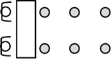
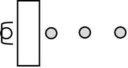
Finally, folding chairs will be used for patients to wait in the pre-vaccination area as well as the post-vaccination area. The chairs must be placed at least 6 feet apart. Figure 8.37 illustrates 12 folding chairs arranged for patient waiting. The number of chairs and how they are arranged are important design considerations. The company would like recommendations about size and arrangement of the pre-vaccination and post vaccination areas to ensure patient safety, utilization of the area, and patient flow. Clearly, a number of different layouts based on the total number of chairs is possible.
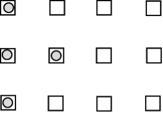
The placement and number of nurse/vaccination stations are of paramount importance to the operation of the clinic. The basic vaccination station has two chairs (one for the nurse and one for the patient) and a table for the nurse to utilize during the vaccination process. A nurse is dedicated to vaccinating the patient in a particular chair. The company is willing to consider a number of design configurations.
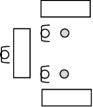
For a given set of nurse/vaccination stations, pharmacists are available to support the nurses. The pharmacist is needed to take the vaccine out of storage, load the hyper-dermic needle, and provide the needle and supplies to the nurse. In Figure 8.38, there is one pharmacist that is supporting two nurse/vaccination stations. In general, pharmacists prepare the vaccination dosages that the nurses inject into the patients. As shown in the figure, pharmacists have their own work area for performing this task. There can be one large work area with many pharmacists that support all nursing stations or multiple pharmacy stations assigned to support specific nursing stations. Because the number of patients on the schedule is known at the beginning of the day, the pharmacists will start preparing vaccine dosages for use at the nurse/vaccination stations when the clinic first opens and continue to prepare dosages throughout the day. The pharmacists prepare the dosages based on the number of patients scheduled for the day, regardless of whether or not the patient actually is processed within the clinic. In this manner, an inventory of ready-made dosages is built up in the pharmacy area for use throughout the day. Whenever four dosages are made, the dosages are transported to the nurse/vaccination station for use on patients. You can assume that there is always a volunteer available to move the dosages and that the time is based on the distance between the stations.
At the nurse/vaccination stations, the supplied vaccination doses are kept on hand, ready to use on patients. For simplicity, you can assume that the doses located within the nurse/vaccination area are close enough that any time to get a dose to a nurse at the station is negligible. If the quantity of doses at the nurse/vaccination station runs out, then the patients requiring a vaccination must wait until the inventory at the nurses/vaccination station is restocked. That is, patients cannot be vaccinated unless there is a dose ready for them.
Observation times for the pharmacist to fill a dose of the vaccine are available in a spreadsheet that accompanies this project. Unfortunately, during the operation of the clinic, incidents may arise that require a pharmacist’s attention such that a pharmacist is needed to resolve the situation. This happens rarely, but during this time the pharmacist that handles the incident is no longer available to perform the nurse support activities. You can assume that during a 6-hour period, there will be on average 2 incidents, Poisson distributed randomly occurring within the interval. The time to handle the incident is quite variable and has a mean of 20 minutes, exponentially distributed. Any of the available pharmacists can handle the incident and a pharmacist will complete their current dosage making activity before handling the incident.
A concern for the design is how many pharmacists should support a set of nurse/vaccination stations. That is, should there be 1 for every two stations or 2 for 6 stations, or other pharmacist to nurse ratios or arrangements?
The company is interested in determining the number of basic nurse/vaccination stations, layout, and support pharmacists that are necessary to handle various throughput requirements. An example layout of the key clinic elements is illustrated in Figure @fig(fig:CovidProjectSystemOverview). In the diagram, there is one station for check-in, temperature checking, pre-vaccination, pre-vaccination seating, vaccination, and post vaccination processing. The company would like a more realistic layout that accommodates the 600-person throughput scenario.
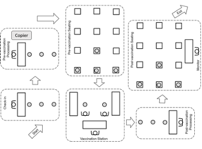
A major constraint for the design of the clinic is the amount of square footage and how it is allocated to ensure that the social distancing requirements are met. In general, patients waiting for service during any part of the process must be able to maintain a 6-foot distance between themselves and other patients. In addition, workers that provide service to patients must be placed to ensure at least 6 feet of distance between each other. Eight-foot tables will be used to facilitate the placement of workers that are allocated to the check-in process, temperature checking, pre-vaccination, and post-vaccination checkout. In addition, small 1 foot tape dots can be placed within the facility to indicate locations where patients are permitted to stand. You may assume that you have up to 9000 square-feet of space for any design configurations you recommend; however, since rented space to operate the clinic can be expensive, you should try to minimize the amount of space (in square-feet) for your designs, while ensuring that you do not exceed 9000 square-feet of space. You should specify as part of your design approximately how many square feet should be dedicated to the major areas of the clinic (check-in, pre-vaccination, pre-vaccination waiting, vaccination, post-vaccination, and post-vaccination seating).
Given the company’s experience with providing flu vaccinations, they have acquired some data about the various processes; however, in some cases, they have only estimated values from domain experts. They are especially interested in understanding how the quality of the data might affect the operating projections for the clinics. The available data is summarized as follows:
Even though patients may arrive at any time within a scheduling block, they tend to arrive near the start of the block, with separation between patients primarily due to walking from their cars. That is, not all patients scheduled for a particular block arrive to the clinic at exactly the start of the block. For simplicity, assume that the average distance from the parking lot to the clinic is approximately 50 yards.
The speed of people walking can vary greatly, but prior data suggests that for short distances within and around buildings with social distancing, people walk between 1 miles per hour and 3 miles per hour, with a most likely time of 2 miles per hour.
Because this is a new vaccine, data on no shows (people who schedule but fail to show up for the appointment) is not readily available. However, no show rates for general appointments at healthcare clinics can be significant, ranging between 12% to 24%. While the company does not think that no shows will be that high for a vaccine, there is some concern about how no shows may affect the operation of the clinic. For simplicity, you should assume that there is a small chance of a no show, approximately, 1%, but the sensitivity to this assumption should be checked.
A very small percentage (0.5%) of patients try to enter the facility without the required items. The requirements are explained and those that don’t have the items need to leave. It is estimated that this check takes between 2 to 4 seconds.
Under the assumption that a person having a high temperature is due to COVID, the chance that someone does not pass the temperature screening can be estimated based on the per person probability of infection. For example, if there are 50,000 new cases in a state of 10 million, the per-person probability is 0.5 percent. Because this can vary significantly by region and many other factors, this variable should be an input parameter for the model. For simplicity assume that 0.5% of the arriving patients will not pass the temperature screening. The temperature check takes between 5 and 15 seconds, uniformly distributed.
Approximately, 2% of the arriving patients will not have their paperwork in order. It is estimated that it takes between 45 and 90 seconds uniformly distributed to use a photocopier to ensure paperwork compliance.
Data associated with the pre-vaccination, vaccination and check-out processes is available in the provided spreadsheet for analysis and use within the modeling.
Allergic reaction rates to the new vaccine are just beginning to be estimated but were extremely rare within the clinical trials. The chance of an allergic reaction should also be an input parameter so that sensitivity analysis can be performed. For simplicity, assume that initial data indicates that 0.002% of the post-vaccination patients will have an allergic reaction to the vaccine.
The patient schedule system is proprietary, and it has been difficult to get data on such a new process. Thus, some rough approximations will be required to model the demand for scheduling slots. The number of people expected to schedule an appointment on a given day is quite variable and is thought to be Poisson with a mean rate that will vary based on the population served. While the company would like design recommendations for different arrival rates, they specifically want a configuration for the case of a mean demand rate of 600 people per day. Data on scheduling clinics indicates that there are two types of scheduling preferences: 1) those people that have very flexible schedules and can pick any of the available slots at random and 2) those people that prefer slots that are later in the day. The break down between the two types of preferences really depends on the demographics of the underlying population (e.g. retirees tend to have more flexible schedules). For simplicity, you can assume that 60% of the people prefer late time windows and the remaining 40% have no preference. For those people that prefer late time windows, the general pattern has been as shown in Table 1.
| Time period (hour of the day) | Chance of selection |
|---|---|
| 1 | 5% |
| 2 | 5% |
| 3 | 10% |
| 4 | 20% |
| 5 | 30% |
| 6 | 30% |
There was no data available on finer time periods. For simplicity, you can assume that within any of the hourly periods, finer division of the time periods would be equally likely to be chosen.
While the clinic is scheduled to be open for a fixed time period, e. g. 6 hours, all patients that enter the clinic during its operation must be processed. In addition, the company is committed to serving all patients that desire a vaccine on a given day. Thus, no limit is placed on the number of people that can be scheduled within a block; however, the company would like this monitored closely and accounted for within any design or staffing plan.
The company is interested in understanding the statistical properties of the following metrics:
The probability that the clinic has to process patients after the scheduled operating hours.
The number of patients in the clinic at the end of its scheduled operating length.
The average time that patients spend waiting for each process.
The total time that a patient spends in the clinic and how that time is broken down into the various waiting and activities.
The utilization of the vaccination nurses.
The utilization of the pharmacists.
The utilization of the workers assigned to check-in, check-out, and pre-vaccination.
The number of patients waiting to be vaccinated.
The number of patients waiting in the post-vaccination area.
The probability that arriving patients cannot enter the building due to inadequate social distancing space or bottlenecks within the process.
The average waiting time of patients based on the hour of the day
The utilization of the staff by hour of the day.
The company would like to know how to staff each area for demand rates of 550, 600, 650, 700 patients per day. That is, how many vaccination stations should they have and how many workers should be allocated to check-in, temperature checking, pre-vaccination, and post-vaccination. They would also like to determine the size of the waiting areas (i.e. the number of seats) and the square footage required for each processing area based on social distancing requirements. The general goal is to have 80% of the patients experience a total vaccination experience time of less than 35 minutes. In addition, they would like to have 70% of patients in any hour of operation experience a total vaccination experience time of less than 35 minutes.
There has been some debate about how to organize and manage the waiting lines within the clinic and pre-vaccination waiting area. In particular, should individual lines be allocated to each nurse at each station or should a single line be used to feed multiple nurses that operate in parallel? For the pre-vaccination waiting area, the company is interested in recommendations that allow for fair and effective movement of patients waiting for a vaccination nurse. How will patients waiting within a general seating area know when it is their turn to proceed for a vaccination? The walking of patients within the facility should be accounted for within your solution.
While the staffing recommendations are of paramount importance, the company would like to know if changing the scheduling windows would be worthwhile. In addition, given the possibility of no shows, the company would like to understand how much over scheduling they should permit. That is, if the clinic is designed for mean demand of 600 people per day, how high can the rate go before the design needs to be changed? For a base configuration, the company is interested in an animation of the layout in order to assess the validity of the model and be used to educate personnel that need to manage the clinics.